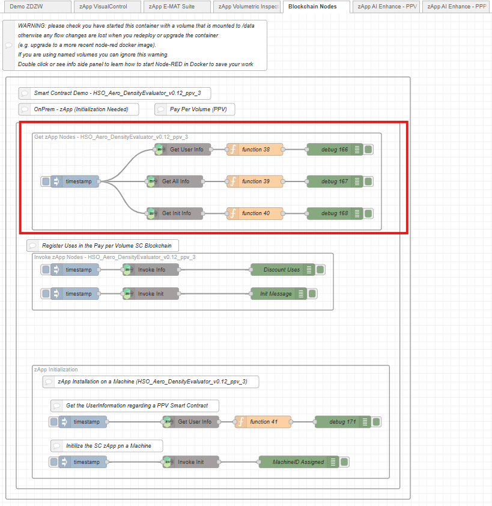
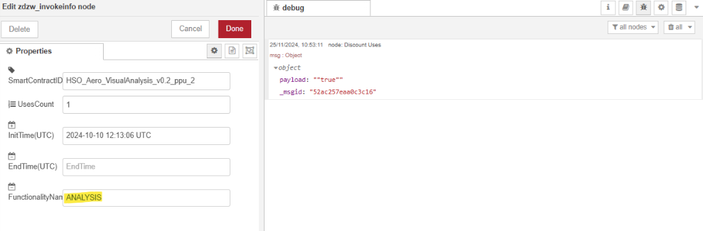
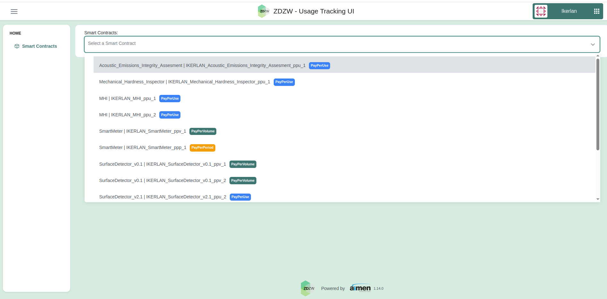
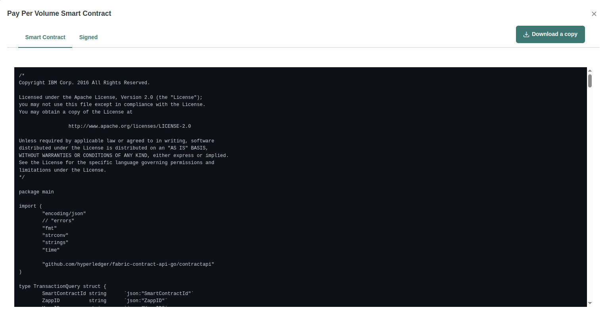
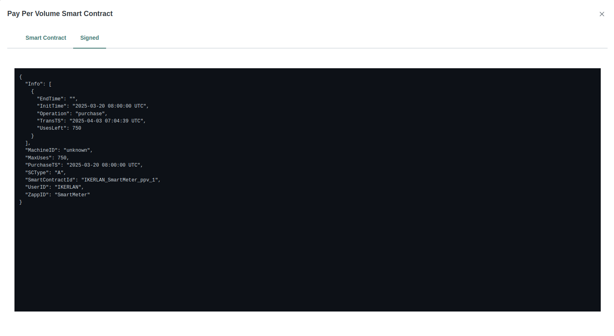
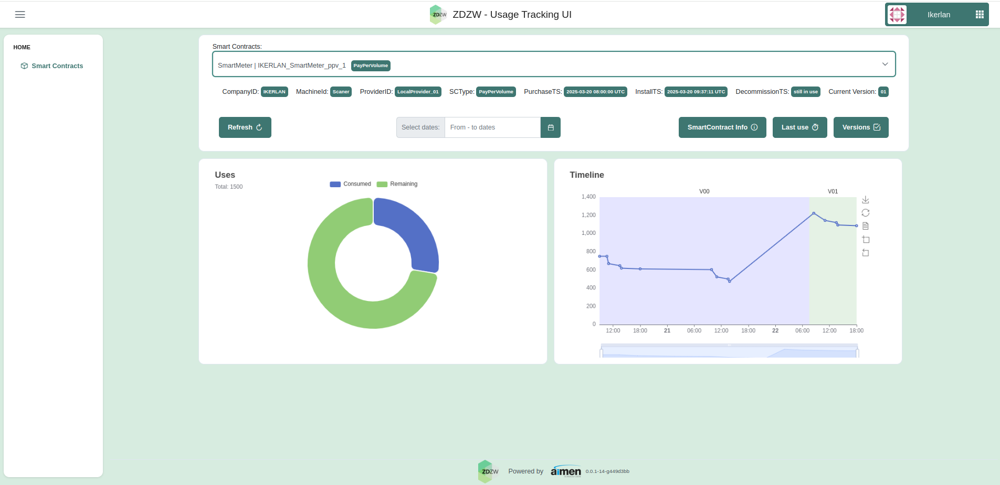
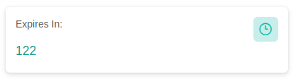

Usage Traceability
1. General Description
The Usage Traceability represents the central communication layer between the Marketplace, the Assets (applications users) and the ZDZW Blockchain. It provides the following main functions:
- Provides zApps with a connection to the blockchain through the Traceability Gateway and the zApp usage tracking UI.
- Provides the marketplace, Traceability Gateway and the zApp usage tracking UI with the required backend to interact directly with the blockchain through an API.
- Manages smart contracts to track how much a ZDZW Inspection Solution has been used.
- Implements business logic to enable traceability of usage data and monetisation management.
- Stores on the ZDZW Blockchain the terms of the smart contract.
- Provides information to the Marketplace to trigger payments according to the terms implemented in the smart contract.
- Tracks and stores the usage of ZDZW applications by end users on the Blockchain (BaaS).
2. Top Ten Functionalities
-
Establish a secure & distributed database: The solution will store information regarding the acquisition, installation (if required), use and decommission of the zApps by different users in a distributed and secure manner. DLT-based technologies will be exploited for this purpose.
-
Blockchain network management, deployment: The solution shall deploy and manage the chosen Blockchain platform.
-
Blockchain integration with zApps and Marketplace: The solution will integrate the Marketplace with the traceability system, linking the Marketplace's zApps acquisition process with the Blockchain. It will also enable the Traceability Gateway to connect the installation and usage processes of the zApps with the Blockchain seamlessly. These integrations ensure secure storage and retrieval of usage data, creating a cohesive link between acquiring zApps and their traceability on the Blockchain.
-
Integration flow runtime: The solution will enable a streamlined and dynamic integration flow runtime within the Traceability Gateway, allowing developers to manage data ingestion, processing, and Blockchain registration efficiently.
-
Data ingestion, data transformation, and Blockchain registration functions: The solution will empower efficient data ingestion, seamless data transformation, and reliable Blockchain registration functions within the Traceability Gateway, ensuring a cohesive and effective integration process.
-
Function palette management: The solution will facilitate comprehensive function palette management within the Traceability Gateway, offering developers a versatile toolkit to customise and optimise integration flows for zApps traceability.
-
Integration flow management: The solution will enable effective integration flow management within the Traceability Gateway, allowing developers to efficiently organise and oversee the data flow for seamless zApps traceability.
-
Integration flow edition user interface: The solution will provide an intuitive user interface for editing integration flows within the Traceability Gateway, ensuring a user-friendly experience for developers to customise and optimise the data flow for zApps traceability.
-
Function palette management UI: The solution will feature a user-friendly interface for managing the function palette within the Traceability Gateway, offering developers a seamless experience in customising and optimising integration flows for zApps traceability.
-
Provide Smart Contract Templates: The solution shall provide the templates for the deployed smart contracts that will manage the storage of zApps usage data.
-
Manage Smart Contracts: The solution shall manage the smart contracts involved in the storage and retrieval of zApps data from the Blockchain platform. This includes their deployment, initialisation and querying.
-
Storage Blockchain transactions: The solution shall store the zApps' usage data in transactions within the Blockchain platform so that it can be queried at a later stage.
-
Request and Usage registration: The solution shall store information regarding when a zApp was acquired and under what conditions. It will also record data on when and where it is installed (if required), the dates and frequency of use, and when the zApp is decommissioned.
-
Application Usage Tracking Visualisation (Every zApp a user owns) (Figure 2): Enables users to visually track and analyse the usage patterns and frequency of each zApp they own.
-
Application Usage Tracking Visualisation (Specific zApp) (Figure 3): Offers a dedicated interface displaying detailed analytics and usage metrics of a particular zApp, aiding users in understanding its performance through interactive visual representations.
3. Architecture
3.1. Diagram

Figure 1. Solution Architecture
The solution requires data from other modules created in ZDZW, like the Marketplace. These modules (in grey in Figure 1) are external to those created in T7.4. However, they are represented in the figure to facilitate the understanding of how the T7.4 modules will be integrated with the rest of the ZDZW platform. Thus, the architecture of this task can be divided into three main subgroups:
- The zApp - Blockchain communication.
- The graphical interface.
- The backend manages the direct interaction with the Blockchain.
zApp - Blockchain communication
The Zapps use these components to store information about the installation (if necessary), usage and decommissioning of the apps. It consists of:
- Traceability Gateway: created by UPV. It is one of the modules with which the zApps interact directly. This component enables the integration of the modules designed in T7.4 with the Marketplace and the zApps. It provides Software Development Kits (SDKs) that developers can use in their backend solutions to integrate with the traceability solution, and a dedicated interoperability solution based on Node-Red. This traceability solution allows zApps developers to easily edit and manage integration flows to register zApp backend data into the Blockchain, using a dedicated integration flow runtime component. Integration flows normally combine data ingestion functions, data processing functions, and a Blockchain storage function to register new data in the Blockchain. Data processing functions allow ingesting data from backend services such as database services (relational or non-relational database), file systems (e.g. CSV or XML files), or messaging services (e.g. MQTT or AMQP brokers). Data transformation functions support the Blockchaintion of data to the specific JSON formatted data that the zApp will use to trace usability data. Finally, the Blockchain storage function facilitates the connection to the API Blockchain component.
- The API gateway, created by SAG. This module is external to the T7.4 task and its use is 'invisible' to the zapps. It manages user authentication, ensuring users can only access their organisation's data.
Graphical interface
- The zApp usage tracking: This component, the 'visualisation' of usage data, is developed by AIMEN.
Back end
This component is the backend; it manages the data coming from the traceability gateway and the Marketplace, and it stores them in the Blockchain. It also delivers the data to the frontend for visualisation. This component is pure backend, and its use is only intended for the Marketplace, the Zapp usage tracking (UI) and the traceability gateway.
- Blockchain API: This service allows other modules to interact with the Blockchain, including all the necessary services for managing Smart Contracts and interacting with the services provided by AWS BaaS. Therefore, it will offer the necessary endpoints to the Marketplace to generate Smart Contracts for each purchase of a zApp. In addition, the API must also provide the necessary endpoints to store the transactions produced by the installation and/or use of a zApp. Finally, it must also handle requests coming from the zApp Traceability Monitoring.
- Smart Contract Management: This service manages Smart Contracts. It will store different types of Smart Contracts according to the conditions of use of the zApp. In addition, it will install, instantiate and execute a Smart Contract, as well as finish once the execution condition has expired.
- Traceability Data Management: This service manages the provisioning and storage of usage data for traceability. Whenever a zApp is used based on the usage condition selected in the Marketplace, this service will store the transaction in the Blockchain, and all requests for zApp usage will also be made through this module.
- Blockchain Network: The Blockchain service stores zApp usage information and Smart Contracts for each zApp purchase.
3.2. SmartContract Life Cycle
This section explains the SmartContract life cycle process and, for each phase, the sequence diagram between the different modules of the architecture. The life cycle of a SmartContract is directly correlated with the life cycle phases of an application available on the MarketPlace.
The modules developed in this task work closely to trace the app's purchase, installation, use and decommission. Thus, to use the following modules correctly, it is crucial to understand the defined lifecycle for the purchased apps through the smart contracts IDs.
Figure 2. Application Life Cycle - SmartContract Life Cycle
As the image shows, the different steps in the lifecycle of a purchased app are:
- Purchase. It must be done through the Marketplace.
- If on-premise, it must be installed. Uninstalled apps cannot be used, and if not installed, the pay-per-period business model cannot provide the Expiration Timestamp.
- Use.
- Renewal: This step is under development.
- Decommission. A decommissioned app cannot be used.
Furthermore, in the pay-per-period model, there is an additional step invisible to the user called "Activation". If the app is on-premise, activation happens when the app is installed. If the app is on the cloud, activation happens when the app is used for the first time. The Activation step defines when the apps start to be used; thus, the purchased time starts running. This is when the Expiration Timestamp is also calculated.
The compulsory phases to be able to use the applications are the following:
- On-premise application: purchase, installation, use, decommissioning.
- Cloud application: purchase, use, decommissioning. The Renewal phase is an optional phase that can be taken when the application is still in use and the user/company wants to continue using it.
The sequence diagram for each of the above phases has been further defined in the next sections.
3.2.1. Create SmartContract
The first phase is the purchase of the application, at which point the SmartContract associated with the purchase is created. A SmartContractID is also generated for its identification, which is used to access the contract data throughout its lifecycle. The sequence diagram of the SmartContract creation process is as follows:
Figure 3. Create SmartContract sequence diagram
3.2.2. Install SmartContract
This phase differs depending on whether the application is purchased to run on-premise or in the cloud.
- If the Application is on-premise, the exact machine on which it will be installed is defined in this phase. In addition, if the app has been purchased under a pay-per-period, this phase is also the moment when it will be activated. Both the time of installation and activation are recorded on the Blockchain.
- This phase is unnecessary if the application is in the cloud. If the application has been purchased as a pay-per-period, its activation occurs during the first use.
Figure 4. Install SmartContract sequence diagram
3.2.3. Invoke SmartContract
Each time the application is used, the usage is stored in order to obtain a trace. For this purpose, the SmartContract must have been created and the application installed. If, in addition, the application is on-premise and is a pay-per-period, it has also been activated. If it is on-cloud, it will be activated during the first invoke.
Each time an invoke is performed, in addition to the usage data (i.e. how many uses or when they happened), the timestamp of when that information has been stored in the blockchain is also recorded.
In terms of how the invokes take place, if the application is automatic ( i.e., without user intervention), the Traceability Gateway is responsible for querying and sending the registration request to the Blockchain API. The other option is for the user to have a dash button in their application. This button will send the registration request to the Blockcahin through the Traceability Gateway.
The sequence diagram of the SmartContract invocation is as follows.
Figure 5. Invoke SmartContract sequence diagram
3.2.4. Query SmartContract
Once the application is running, there is the option to query the SmartContract to find out how many uses are registered, how many uses are left before the end of the contract or how many days are left before the contract expires. The sequence diagram for querying the SmartContract is as follows.
Figure 6. Query SmartContract sequence diagram
3.2.5. Renew SmartContract
In the lifecycle of an application, the renewal phase is an optional phase that the user can perform to extend the lifecycle of the SmartContract. To do so, this renewal will be activated from the Marketplace. The terms and conditions of the renewal contract remain unchanged. For example, suppose that the initial contract had 50 uses; the renewal will be for an additional 50 uses, and if the contract was for 30 days, the renewal will be for another 30 days.
The sequential diagram of the SmartContract renewal process is as follows.
Figure 7. Renew SmartContract sequence diagram
3.2.6. Block SmartContract
Once the contract expires, the application must block its runtime and notify that the contract is no longer in force. The Traceability gateway application will send the request to the Blockchain API to block the Smartcontract. This will indicate that, officially, the contract is no longer in force.
However, this does not prevent users from using the application; instead, the application itself must block users from using it. If it does not do so, the Blockchain will register the uses, and the Marketplace will be able to bill these uses at the price set for this case. The sequence diagram of the SmartContract blockchain process is as follows:
Figure 8. Block SmartContract sequence diagram
4. Image Overview
The usage tracking system interface is a tool designed to monitor and analyze the usage of smart contract-based applications in ZDZW. With a user-friendly interface, this system provides an intuitive overview of application usage, enabling users to gain actionable insights at a glance.
Users can track the usage of the various applications they have purchased from the ZDZW Marketplace. The platform offers a summary of usage data, highlighting the most frequently utilized applications. By presenting this information visually, users can easily identify trends and prioritize their resources effectively.
Figure 9. Initial page for unauthenticated user
4.1. Traceability Gateway
The Traceability Gateway offers a user-friendly interface through Node-RED, providing a visual and intuitive way to configure integration flows for zApps traceability. Follow these steps to effectively use the Traceability Gateway:
-
Access the Node-RED Interface: Open a web browser and navigate to
http://localhost:1880or the specified host and port where Node-RED is running. This grants access to the Node-RED user interface. -
Explore the Node Palette: On the left side of the interface, you'll find the node palette containing various nodes representing different functionalities tailored for different smart contract types.
-
Drag and Drop Nodes: Build integration flows by dragging nodes from the palette and dropping them onto the editing area. This allows you to visually design the flow of data for traceability within the ZDZW platform.
-
Interconnect Nodes: Connect nodes by drawing links between them to define the logical sequence of data processing. This interconnection forms the integration flow, ensuring a smooth transition of data from one node to another.
-
Configure Nodes: Double-click on each node to configure its parameters according to your specific use case. Configure settings such as connection details, data transformations, and other parameters required for traceability.
-
Deploy Integration Flows: Save your configured integration flows within Node-RED, and click the "Deploy" button. This action activates the changes and makes your integration flows operational, ready to handle zApps traceability data.
-
Monitor Execution: Use the Node-RED interface to monitor the execution of integration flows. The interface provides real-time feedback on the status of nodes, ensuring transparency in the data processing pipeline.
-
Troubleshoot and Debug: In case of issues, utilize the Node-RED interface to troubleshoot and debug integration flows. Examine logs, inspect node statuses, and make adjustments as needed to ensure smooth operation.
-
Iterate and Improve: Continuously iterate on your integration flows based on evolving requirements. Use the flexibility of the Node-RED interface to make improvements, add new nodes, or modify existing configurations for enhanced traceability.
-
Save and Export Flows (Optional): Save your integration flows as a project within Node-RED, allowing for easy retrieval and modification. Optionally, export flows for sharing with other developers or for backup purposes.
By following these steps, you can effectively use the Traceability Gateway through Node-RED, enabling seamless integration and management of zApps traceability within the ZDZW platform. Adjust configurations as necessary to meet specific traceability requirements.
Although the Traceability Gateway is a backend module, it also incorporates an interface. Figure 11 shows the user interface of the traceability Gateway. The tool provides a toolkit of nodes that can be used to integrate backend functions. Some of the nodes include MQTT clients, TCP/IP clients, HTTP clients or servers, relational and non-relational database clients, CSV file readers, etc. Through the interface, users can drag a node and drop it in the edition area, and then interconnect nodes to build the integration logic with the Blockchain traceability nodes as a flow.
Figure 11. Traceability Gateway
For example, users can integrate Node-RED with the Traceability Gateway and a SQL database, enabling them to orchestrate a robust and customizable workflow for efficient management of zApp usage data within the ZDZW platform. The visual representation of the flow not only simplifies the design process but also facilitates easy monitoring and maintenance of intricate integration processes. As depicted in Figure 12, the interconnected nodes and logical sequence provide a clear overview, empowering users to visualize and optimize their data processing pipeline effortlessly.
Figure 12. Traceability Gateway
5. Hardware Components
This does not apply to T7.4.
6. Computation Requirements
The minimum and recommended CPU, RAM and storage requirements are as follows.
6.1. Traceability Gateway
The deployment of the Traceability Gateway is containerized using Docker, providing a convenient and isolated environment for efficient execution. Below are the specific computation requirements for the Traceability Gateway within a Dockerized deployment:
-
Processor (CPU): The Traceability Gateway Docker container is optimized for containerized environments and adapts well to varying CPU resources. A quad-core or higher processor is recommended for handling increased workloads and concurrent integration flows.
-
Random Access Memory (RAM): Allocate a minimum of 8GB of RAM to the Docker container hosting the Traceability Gateway.
-
Storage: Docker containers benefit from efficient storage utilization. Ensure the host system provides sufficient disk space for Docker images and containers. A minimum of 20GB of available disk space is recommended to accommodate configuration files, logs, and temporary data within the Traceability Gateway container.
-
Operating System Compatibility: Docker containers offer platform-agnostic deployment. The Traceability Gateway Docker image is compatible with various operating systems. Users can deploy the Docker container on Linux, Windows, or macOS systems that support Docker. Ensure that the host system has Docker installed and configured.
By considering these computation requirements in a Dockerized environment, users can optimize the Traceability Gateway deployment, leveraging containerization's benefits for efficient integration and management of zApps traceability within the ZDZW platform.
6.2. Usage tracking Visualization
The Usage Tracking Visualization is a web application that uses the Angular framework to display data and charts. It runs inside a Docker container, which makes it easy to deploy and manage. To run the Usage Tracking Visualization, a server with Docker installed will be needed, as well as hardware of at least 2 CPU cores and 4 GB of RAM for optimal performance.
6.3. Blockchain Platform
These computation requirements for the blockchain pertain to those needed for its deployment during the development phase of ZDZW. They do not apply to production or the computational requirements for partners using solutions created in T7.4.
The BAAS platform chosen is the one provided by AWS. Using AWS to deploy a Blockchain network requires combining several of its products. Therefore, it must be ensured that all of them are available in the AWS region being used. We will use Ireland, eu-west-1, which ensures that the data is on EU soil.
Thus, Amazon Managed Blockchain (AMB) has been leveraged to create a private Blockchain network based on Hyperdledger Fabric. AMB can be used to create the Hyperledger network, the members, and their peers. However, this service needs Fabric clients to interact with the network (created using the AWS service EC2), connection management and traffic control (created using the AWS VPC). An overview of the configuration is presented in Figure 13.
Figure 13. AWS Hyperledger Deployment
For this configuration to be successful, there are minimum requirements that both the peer nodes and the client fabric must meet.
- The Blockchain instance type of the peer node must be at least of type
bc.t3.small. -
The EC2 instance containing the Fabric Client must be at least of type
t3.mediumand must be given a storage capacity of at least 20 GiB. Furthermore, when configuring the EC2 instance, the Amazon Machine Image (AMI) must be chosen, which, in the case of the instance for the Fabric client, must be Amazon Linux. Moreover, among the available images, Amazon Linux 2023 AMI 2023.1.20230825.0 x86_64 HVM kernel-6.1 and 64-bit architecture have been chosen. Finally, to finish configuring the EC2 instance, it is necessary to ensure that the EC2 instance has all the necessary packages, such as Docker, Docker-compose, or Golang. The required versions of those packages are: -
Docker17.06.2-ce or later
-
Docker-compose1.14.0 or later
-
Go1.14.x
Note: The Deployment Annex provides more information and details about the requirements.
7. Installation Procedure
Step by step on how to install the application:
- Standalone
- In the Kubernetes platform using helm charts: description of the different options
7.1. Traceability Gateway
To deploy the Traceability Gateway using Docker Compose from the provided Git repository and Helm charts for Kubernetes (to be released in the future), follow these steps:
- Clone the Git Repository:
- Navigate to the Repository Directory:
-
Configure Docker Compose (Optional): Modify the
docker-compose.ymlfile if specific configurations are required, such as adjusting ports or volumes. -
Build and Start the Docker Containers:
This command builds and starts the Traceability Gateway Docker containers in detached mode.
-
Access the User Interface: Open a web browser and navigate to
http://localhost:1880to access the Node-RED user interface. -
Configure Integration Flows: Utilize the Node-RED interface to design and manage integration flows. Customize nodes, interconnect them, and configure each node based on your integration requirements.
-
Save and Deploy Flows: Save your integration flows within Node-RED, and click the "Deploy" button to activate the changes. This ensures that your configured flows are ready for execution.
-
Monitor Logs: Monitor the container logs for any potential issues or debug information. Use the following command to view logs:
- Shutdown the Containers: When needed, stop and remove the Traceability Gateway containers:
By following these steps with Docker Compose, you can deploy the Traceability Gateway from the specified Git repository, facilitating seamless integration and management of zApps traceability within the ZDZW platform. Adjust configurations as necessary for your specific deployment environment and requirements.
*Note for Kubernetes Users: Helm charts for deploying the Traceability Gateway on Kubernetes are currently under development and will be released in the future. Stay tuned for updates on Helm chart availability. Adjust configurations as necessary for your specific deployment environment and requirements.*
7.2. Usage tracking Visualization
To deploy the Tracking Web Application, a Helm chart has been configured for a simplified installation process. The Helm chart facilitates the deployment and management of the application on Kubernetes, ensuring that all necessary resources, such as services, pods, and ingress configurations, are correctly set up. Once the Helm chart is applied, the application will be accessible, allowing users to securely track their smart contract usage.
7.3. Blockchain Platform
This installation procedure for the blockchain pertains to that needed for its deployment during the development phase of ZDZW. It does not apply to production or any installation required for partners using solutions created in T7.4.
Once the minimum configuration explained in section 6.3 has been set up, connections to the Blockchain network can be established. For the first connection, the following are required:
- A Blockchain network.
- A channel within this network.
- An EC2 instance.
- The security zones explained in section 6.1 to be correctly configured.
For a successful first connection from a local computer, it is necessary to have:
- The private key used during the creation of the VPCs.
- The public IP of the computer from which we are connecting.
- The public DNS of the instance.
To control incoming traffic to the EC2 instance, the public IP of the local machine will be permitted to connect to the VPC. Once permissions are granted, using SSH and the public DNS of the instance, it is possible to connect to the instance remotely.
Once on the instance, make sure the Docker container containing the fabric client is running:
Once the fabric client is up, packages can be installed and uninstalled in the instance like in a regular Ubuntu machine. As far as the installation and deployment of Smart contracts are concerned, this is done via dockerized .go scripts. A detailed explanation can be found in the Annex.
8. How To Use
8.1. Traceability Gateway
Traceability Gateway Project is used to demonstrate the integration of different systems in a single gateway. It enables the use of different data protocols, databases and technologies together under the same framework.
The integration architecture is depicted in Figure 14 for the solution provider partners. It shows the different data pipeline possibilities that enable seamless integration with each zApp solution by considering their working technology and provide connection to the existing Blockchain technology deployed for traceability purposes.
Figure 14. Keycloack API Keys
8.1.1 Keycloack Authentication Nodes
Before using the Traceability Gateway, the Keycloak authentication flow must be run first. This flow will enable developers to authenticate their organization for future Smart Contract usage, installation and Blockchain use.
To properly configure this flow, the user must first:
-
Access the Web Portal and Log In or Create an Account if you don't have any: https://portal-frontend-zdzw.cloud.zdzw-project.com
-
Once successfully logged in, access the dashboard and click the developer tab on the bottom left part of the screen. The following API keys are used to validate your profile in the Node-RED microservice in order to enable access to the Blockchain traceability functions.
Figure 15. Keycloack API Keys
Once we have our API Key values, the authentication flow in Node-RED needs to be configured. This flow will enable access to the token variable globally.
For that purpose, our flow will make the request via HTTP and store the variable as global.token
Figure 16. Keycloack Node-RED Authentication Flow
The HTTP request needs to be done with the following configuration:
URL: https://portal-api-zdzw.cloud.zdzw-project.com/developer/token
org-name: 'Prueba'
x-api-key: '143883a3ec5b269cece6bc3672e202c9a3f55a213095ef8ce2b6b193751af05d'
Note: org-name and x-api-key are values provided for each organization successfully registered (as in Figure 17)
Figure 17. Keycloack HTTP Request
Once the HTTP request is configured, the msg.payload, which acts as the token variable, needs to be assigned, saved and stored as global.token.
This makes the variable fully accessible in the Node-RED microservice.
Figure 18. Keycloack 'set.global.token' configuration
For recurrent use, the variable can be easily accessed by using the 'Read Token Global' node. This node will provide the global variable as a msg.payload.
Users can confirm that the token is successfully stored and accessed using the proposed flow.
Figure 19. Keycloack 'Read Token Global' configuration
That's it, your microservice is now properly configured and linked to your organization.
8.2. Blockchain Nodes
Custom Blockchain nodes have been prepared based on ZDZW zApp and Marketplace. These nodes will enable ZDZW zApps to communicate with Smartcontracts and Blockchain service providers. For that purpose, a series of nodes have been created to communicate with the Blockchain. Based on this premise, the nodes have been created according to the parameters described in the Blockchain Platform description in Section 8.1. All Blockchain nodes are already generated and installed by default in the Node-RED microservice. The nodes can be seen on the left side of the menu in Figure 20 and Figure 21, and the return information is visualized in the debug right part of the screen in Figure 20 and Figure 21, providing a success message when the request has been performed correctly.
Figure 20. Blockchain Nodes Pipeline and Node RED UI
It must be noted that two types of nodes (GET for reading and INVOKE for writing) are included in this microservice:
- GET Nodes: These nodes allow reading operations on the Blockchain provider to obtain information from specific Smart Contracts (Figure 22) or zApps (Figure 23)
Figure 21. Smart Contract Blockchain Nodes
Figure 22. zApp Blockchain Nodes
Depending on the GET Smart Contract node selected certain Input Data (Figure 23 and Figure 24) will be required (SmartContract ID, User ID, Machine ID...).
This information is readily available in the smart contract once the purchase has been executed from ZDZW Marketplace.
Figure 23. Smart Contract ID Input Data
Figure 24. User ID Input Data
It works similarly when reading zApp Blockchain information. Input Data will be needed in order to receive a true response from our nodes (Figure 25)
Figure 25. zApp Input Data
- INVOKE Nodes: These nodes allow writing operations on the Blockchain provider to update, set or create new data related to specific Smart Contracts or zApps.
When using nodes for creating new Smart-Contracts the node can be used as seen in Figure 26:
Figure 26. Smart Contract Creation
Note that the Input Value Functionalities must be provided when creating a new Pay Per Use (PPU) Smart Contract, and the Input Value Days must be provided when creating a new Pay Per Period (PPP) Smart Contract:
Invoke InitNode is typically used when needing to INSTALL a zApp on a custom-name industrial equipment.Invoke InfoNode is used to register/update uses of certain custom-name equipment in the Blockchain.
When the Input information required (Figure 27,Figure 28 ) is correct, true data response for usage registration or initTrue when initializing the app will be shown as in Figure 29.
Figure 27. zApp Invoke Input Data (1)
Figure 28. zApp Invoke Input Data (2)
Figure 29. zApp Invoke Nodes
8.2.1 Blockchain Pay Per Volume (PPV) Example
This section describes the Node-RED flow and Gateway Nodes for managing the Pay Per Volume (PPV) use case when using Blockchain-based smart contracts.
If the Smart Contract is CLOUD based, it does NOT need to be initialized/installed on factory equipment. The GetUserInfo and GetAllInfo nodes will provide this information so:
- MachineID:
unknow, needs to be initialized on industrial equipment by providing a MachineID (i.e. Custom_Inspection_Equipment) [Include an image with the result] - MachineID:
cloud, it is ready to be used. [Include an image with the result]
The following flow examples include retrieving information about the current state of a purchased Smart Contract, installing a Smart Contract on a specific machine and registering uses associated with the Smart Contract in the Blockchain. The flow structure is divided into three main sections:
- Retrieving Smart Contract State Information
- Initializing and Installing a zApp Smart Contract on a factory Machine
- Registering Uses on the PPV Smart Contract
Figure 30. Pay Per Volume Example
1. Retrieving Smart Contract State Information
This section contains nodes that retrieve user information and smart contract details, allowing for a comprehensive view of the current contract state. Nodes Involved:
- Get User Info: Retrieves the user information associated with the contract.
- Get All Info: Gathers all relevant data related to the smart contract.
- Get Init Info: Provides the initial information for the contract.
Flow Execution for this operation:
- Each node is triggered by a timestamp node to manually start the process and obtain information regarding the subcontract.
- This flow will provide the main information, whther it is already installed and the usage it has been subject to.

Figure 31. Pay Per Volume zApp Usage Registration
2. Initializing and Installing a zApp on a Machine
This section configures and installs a zApp on a designated machine by associating it with a unique Machine ID on the smart contract. Nodes Involved:
- Get User Info: Retrieves the necessary user information for installing the zApp.
- Invoke Init: Initializes the zApp Smart Contract installation on the machine.
Flow Execution for this operation:
- The zApp initialization on the machine completes by registering the Machine ID with the smart contract ID.
Figure 32. Pay Per Volume zApp Installation on Machine
3. Registering Usage on the Pay Per Volume Smart Contract
This section registers each usage instance of the zApp on the Blockchain under the Pay Per Volume model. Nodes Involved:
- Invoke Info: Invokes information regarding registered usage on the Blockchain.
Flow Execution for this operation:
- Both Invoke Info are activated through a timestamp node (could be activated by an inspection result, material consumption or length run).
- The output is sent to notification nodes (Discount Uses and Init Message) to confirm successful registration on the Blockchain.
Figure 33. Pay Per Volume zApp Usage Registration
8.2.2 Blockchain Pay Per Use (PPU)
This section describes the Node-RED flow and Gateway Nodes for managing the Pay Per Use (PPU) use case when using Blockchain-based smart contracts.
- The first Block provides general information regarding a Smart Contract, such as Functionalities available, initialization information and usage registration.
- Second block provides information regarding the zApp Smart Contract installation on industrial equipment.
- Third block is an example of the Usage registration for a certain functionality.
Figure 34. Pay Per Use Example
Due to the nature of Pay Per Use, the Functionality of the usage must be provided for adequate billing. The functionality is defined on the Smart Contract; when using the GetInitInfo Node, the user will obtain information regarding acceptable uses for traceability purposes. As can be seen in Figure 35, the functionalities accepted by this Smart Contract are 'ANALYSIS', 'PREDICTION' and 'MODEL'.
Figure 35. Pay Per Use (PPU) Functionalities Available
Invoke Init node is used for zApp initialization. They need the arguments SmartContract ID, MachineID (i.e. Custom Industrial equipment name) and InitTime (in UTC format).
Figure 36. Smart Contract Example 'HSO_Aero_VisualAnalysis_v0.2_ppu_2' is installed in the 'Custom_MachineName_4' equipment:
Figure 36. Pay Per Use (PPU) zApp Initialization on a Machine
Invoke Info nodes for zApp usage registration need the arguments SmartContract ID, Uses Count, InitTime (in UTC format), and FunctionalityName to be included.
In the previous example, the Smart Contract functionalities are 'ANALYSIS', 'PREDICTION' and 'MODEL'. An 'ANALYSIS' use is registered in the Smart Contract as can be seen in Figure 37.

Figure 37. Pay Per Use (PPU) zApp Invoke Init Node Usage
When the Invoke function has been successfully deployed, a confirmation true message will be received by the user.
This payload confirms that the Blockchain insertion has been performed correctly as can be seen in Figure 38.
Figure 38. Pay Per Use (PPU) zApp Invoke Info Node Usage
Note: In case the Smart Contract is CLOUD based, it does NOT need to be initialized/installed on factory equipment.
The following flow examples include simple operations such as:
- Retrieving information about the current state of a purchased Smart Contract.
- Installation of a Smart Contract on a specific machine.
- Blockchain use registration associated with the PPU Smart Contract.
1. Retrieving information about the current state of a purchased Smart Contract.
For retrieveing information about a PPU Smart Contract, the GetInit Node is used. Note that GetAllInfo and GetUserInfo Nodes are NOT available for this PPU use-case.
For Usage monitoring, there are specific nodes: Get All Info Functionality and Get Period Functionality.
The first one, Get All Info Functionality, provides all the historical data of a Smart Contract Usage registration for a certain Functionality and a certain period of time.
As can be seen in the flow below, the historical data regarding the 'ANALYSIS' functionality is provided (Figure 39.)
Figure 39. Pay Per Use (PPU) zApp Get All Info Functionality Node Usage
The second node, Get Period Functionality, provides only the last USE information regarding a certain functionality and for a certain period of time.
In Figure 40. can be seen the Input data required and the output message with the information regarding the ANALYSIS functionality.

Figure 40. Pay Per Use (PPU) zApp Get Period Functionality Node Usage
Both of these Nodes Get All Info Functionality and Get Period Functionality provide the information based on the functionality type.
For instance, considering the previously used Smart Contract, historical data for the 'ANALYSIS', 'PREDICTION' or 'MODEL' can be provided as can be seen in Figure 41.
Figure 41. Pay Per Use (PPU) zApp Functionality Uses
The GetInit Node should provide a message with the initialization information that specifies the installation (or purchase date if not installed yet) of a Smart Contract, as shown in Figure 42.
Figure 42. Pay Per Use (PPU) zApp Get Init Node Usage
In case the Smart Contract is not installed yet, and the user is trying to access it, the following error is returned as in Figure 43.
This error app is not installed yet indicates that the SmartContract needs to be installed on a MachineID in order to start using it according to the flow in section 2 below.
Figure 43. Pay Per Use (PPU) zApp Init Error
2. Installation of a Smart Contract on a specific machine
By using the Invoke Init Node and passing the arguments SmartContract ID and MachineID (i.e. Custom_MachineName_4) the Smart Contract is initialized in the equipment (Figure 44.)
Figure 44. Pay Per Use (PPU) zApp Init Parameters
When the SC is successfully initialized, a confirmation message is returned initTrue (Figure 45.)
Figure 45. Pay Per Use (PPU) zApp Init Confirmation message
Our SC is ready to be used in the 'Custom_MachineName_4'. For confirmation, please check with the GetInit Node the SC status.
Both activation date and functionalities are returned.
In the example below the Pay Per Use (PPU) functionality alternatives available are: 'ANALYSIS', 'PREDICTION' and 'MODEL' and the Operation field is confirmed as Installation on the MachineID selected (Figure 46.).
Figure 46. Pay Per Use (PPU) zApp Installation Confirmation
3. Blockchain use registration associated with the PPU Smart Contract .
In order to use the Pay Per Use (PPU) Smart Contract, the functionality field must be provided. For a certain use registration, the node Invoke Info is used.
Considering the previous example, the functionality to be provided will be one of the fields mentioned: 'ANALYSIS', 'PREDICTION' or 'MODEL'.
Figure 47. Pay Per Use (PPU) zApp Functionality Parameters
In case the User Registration has been successfully integrated into the Blockchain registry, the following confirmation message will appear.
Figure 48. Pay Per Use (PPU) zApp Use Registration Confirmation
In case the functionality provided is not available/wrong for the purchased SC, the component will provide the following error message:
Figure 49. Pay Per Use (PPU) zApp Use Registration Error
8.2.3 Blockchain Pay Per Period (PPP)
This section describes the Node-RED flow and Gateway Nodes for managing the Pay Per Period (PPP) use case when using Blockchain-based smart contracts.
- These contracts provide unlimited usage of a certain zApp for a limited amount of time that is expressed in days.
-
The number of Uses registered is accumulated per each iteration with the SC and registered in the variable 'AccumUses'.
-
The first Block provides general information regarding a Smart Contract, such as Functionalities available, initialization information and usage registration.
- Second block provides information regarding the zApp Smart Contract installation and usage on industrial equipment.
Figure 50. Pay Per Period (PPP) zApp Basic Blocks
8.2.3.1 Cloud zApp Pay Per Period (PPP)
In case the Smart Contract is CLOUD based, it does NOT need to be initialized/installed on factory equipment.
The GetAllInfo node will provide all the SC information:
- MachineID:
cloud, it is ready to be used.
The GetInitInfo node will send an error indicating it cannot be installed due to its CLOUD nature.
Figure 51. Pay Per Period (PPP) CLOUD zApp response
- MachineID:
cloud, it is ready to be used.
8.2.3.2 Onprem zApp Pay Per Period (PPP)
In case the Smart Contract is deployed as ONPREM, it does NEED to be initialized/installed on factory equipment.
The GetAllInfo node will provide all the SC information:
- MachineID:
unknow, needs to be initialized on industrial equipment by providing aMachineID(i.e. Custom_Inspection_Equipment)
The GetInitInfo node will send an error indicating it cannot be installed due to its ONPREM nature.
An error indicating that the equipment needs to be initialized is returned by GetInitInfo node.
Figure 52. Pay Per Period (PPP) ONPREM zApp response
To avoid this error, user must INSTALL the Smart Contract to a factory equipment by assigning a Machine ID to it as shown in Figure: 53:
Figure 53. Pay Per Period (PPP) ONPREM zApp Machine Installation
After the SC has been successfully installed on the Device (i.e.: MIROCT_3D) a initTrue message shsould appear as shown in Figure: 54
Figure 54. Pay Per Period (PPP) Success Initialization Message
Now the GetInitInfo node will provide the information regarding the installation as shown on Figure: 55
This information contains details about the installation date as well as the Machine ID to which the SC has been installed.
Figure 55. Pay Per Period (PPP) Get Init Info Message
Now our Smart Contract is ready to be used and to track some usage.
When user invokes the InvokeInfo node, data is saved in the Blockchain and a 'true' message as shown in Figure 56 will be shown.
Figure 56. Pay Per Period (PPP) Sucess Usage Message
NOTE: When the period has expried, the InvokeInfo node porvidesthe folowing message indicating that the data has been stored but the contract is no longer active as can be seen in Figure 57.
Figure 57. Pay Per Period (PPP) Expired SC Usage Message
8.3. Traceability Gateway Use Case Nodes
In the ZDZW project, there are several zApps that encompass different data communication and connection methods, including TCP/IP, MQTT, OPC-UA, and custom-based APIs. Also, the data storage is different according to the selected solution and use-case application, including relational and non-relational databases that are located locally or in the cloud. Several ZDZW zApp use cases are presented to developers to clarify and enlighten the potential Node-RED can have on data management.
8.3.1 AV AI-based QC zApp
In the ZDZW framework of action our Artificial Vision Artificial Intelligence Quality Control is based upon custom computer vision models that are easily deployed in industrial facilities. This zApp tool will help to tailor-made vision algorithms for custom inspection services. By implementing this zApp, Users will gain control to customize state-of-the-art models that will ease and optimize the inspection process during QA/QC procedures.
For that purpose, the AV AI-based QC zApp solution relies on image inference for anomaly detection. Batch images are sent to the zApp for anomaly detection, the inference result is saved in a non-realtional database which is MongoDB that is located locally or in the cloud. This data is typically saved in JSON format:
{
"_id": {
"$oid": "665f2a5da771ee83d31a96ee"
},
"_cls": "InferenceDocument.InferenceDetectionDocument",
"name": "Inference 2024-06-04",
"created": {
"$date": "2024-06-04T14:53:17.441Z"
},
"modified": {
"$date": "2024-06-04T14:51:03.205Z"
},
"company": "VSYS",
"user": "mdelpin",
"training": {},
"status": {
"state": "COMPLETED",
"metrics": {
"total_time": 87.80523338720177,
"avg_preprocess_time": 2.101826365625368,
"avg_inference_time": 32.55792443797048,
"avg_postprocess_time": 0.41774154704422317,
"avg_img_time": 33.30982760065764
}
},
"images": [
{
"_cls": "InferenceDetectionImageDocument",
"name": "167612_3754_20240105_223025_028.jpg",
"processed": true,
"results": [
{
"class_index": 0,
"confidence": 0.6938128689144347,
"x": 0.4442461876577044,
"y": 0.170319901118551,
"w": 0.7542081040197404,
"h": 0.7598171420591529
},
{
"class_index": 0,
"confidence": 0.9486363012441077,
"x": 0.10568511120992286,
"y": 0.1907250650376784,
"w": 0.1497690740691806,
"h": 0.791912658254414
}
]
}
],
"parameters": {
"_cls": "InferenceDetectionParametersDocument",
"mode": "best",
"size": 640,
"max_detections": 100
},
"results_meta": {
"class_names": [
"Hole",
"Septum"
],
"class_colours": [
"#f4cd92",
"#61b4d8"
]
}
}
Our Node-RED microservice allows developers to easily connect to the local/cloud non-relational database to store the inference result of the images. For that purpose, the Node-RED microservice contains MongoDB nodes that can be configured in each scenario for a seamless connection. To enable the connection on this node for data insertion, it must be configured according to Figure 41. and Figure 42.
In Figure 41, the connection string to the database must be specified, the mode or operation type (collection or database operation), the collection or database name upon which this operation will be performed, and the operation to be performed in the pipeline. The example provided specifies the inference of an on-poem device performing inferences on an industrial scenario. The insertOne operation has been selected as an example for that purpose.
Common collection operations are find, findOne, insertOne, insertMany, updateOne, updateMany, deleteOne, deleteMany, aggregate and more.
Figure 50. MongoDB Node Camera Inference Connection
Our Figure 50 shows advanced options in the MongoDB node. These options relate to the user management on the local/cloud database and help provide limited Read/Write access to certain users when developing new pipelines in the Node-RED microservice.
Figure 51. MongoDB Node Input Data
Once our Camera Inference Pipeline is ready, our zApp application will allow us to save/read/write data in our local/cloud non-relational database. If the camera communication protocol changes from default, the pipeline can be easily updated by importing any widely used protocol nodes (TCP/IP, OPC-UA or MQTT) to the flow.
When the database connection is set, and the equipment is connected, it is time to implement and deploy the Blockchain nodes that provide traceability to the process. For that purpose, the proposed pipeline will provide robustness mechanisms against data corruption. The pipeline shown in Figure 43 provides a mechanism that checks whether new data have been inserted into the non-relational database (new uses or inspections have taken place); in case new uses are registered, the Blockchain is updated with the date, time and number of uses are discounted from the total. This tool can help to provide robustness in inspection operations when no internet connection (or connection is lost) with the inspection equipment.
Figure 52. MongoDB and Blockchain robustness mechanism
Figure 53 and Figure 54 show both scenarios in the pipeline, scenarios in which new uses are detected and inserted in the Blockchain and when NO new uses are detected by the pipeline, respectively. Considering this pipeline, both INVOKE (writing) and GET (read) Blockchain nodes are included in the pipeline. The pipeline can be set to be run periodically, providing custom needs in terms of Blockchain traceability.
Figure 53. New Uses detected
Figure 54. No New Uses detected
The pipeline shown above is only an example of the mechanisms that can be easily integrated into our AV AI-based QC zApp. This tool can help developers to gain valuable insights, develop new robustness pipelines and ensure Blockchain traceability integration with the specific zApp connection methods.
8.3.1.1 Welding Inspector zApp
The Welding Inspector zApp relies on the information provided by the Electro-Magnetic Acoustic Transducer (E-MAT) equipment. Our Node-RED microservice comes preconfigured to enable communication with the equipment according to the protocols defined by Innserpec.
There are two main modes in which the equipment communication with the microservice can be carried out which are via TCP/IP protocol and through the custom API provided by Innerspec. Both methods are already preconfigured in our Node-RED microservice with the port configuration (for TCP/IP protocol) and API calls (for the custom API) according to Innerspec documentation.
- TCP/IP: The communication relies on the client/server configuration depending on the Inspection mode selected. All the ports can be customized to be in the range of 1000 to 65535 (expect ports 3000, 4000, 7001, 8000, 9000 and 9001).
There are three (3) modes by default on the E-MAT equipment. Test mode (testing purposes) is by default on port 5000, Scan mode (calibration purposes) in port 2000 and Inspection mode (pay per use mode) in port 1000. The connection with these ports on the local host can be achieved as shown in the following Figure 55. and Figure 56
Figure 55. E-MAT Client/Server TCP/IP addresses for testing and scanning
Figure 56. E-MAT Client/Server TCP/IP addresses for inspection
Once the connection is established with the E-MAT equipment via TCP/IP protocol, the information regarding the inspection batch is displayed on the debug window as shown in Figure 48 and according to the following JSON structure.
{
"inspectionType": "object", // Defines the inspection mode in whihc the sysem is operating
"3": "INSPECTION", // it can be Test, Scan or Inspection mode
"getInspectionJob": "4568", // Provides the inspectionJob ID
"start": 1720610016391, // Starting time in UNIX format
"stop": 1720610016613, // End time in UNIX format
"insp_time": 222, // Duration time
"recordNumber": 1, // recordID number
"tag": { // Wave parameters registered by E-MAT euipment
"CH#_GATE#_AMPLITUDE (%)": 50,
"CH#_GATE#_THICKNESS (mm)": 10,
"CH#_GATE#_TOF (s)": 100
},
"version": 2,
"disposition": 2
}
Figure 57. E-MAT Debug Inspection Information
- Custom API: The communication relies on client/server requests via HTTP protocol. For the custom API, the port configured for the communication is the 7001. This port is set by default and cannot be changed. Thus, it is not available in TCP/IP communication protocol. The API provides the information via HTTP protocol, so the nodes to be configured will be HTTP nodes, as can be seen in Figure 49, which shows all the nodes available to configure HTTP requests and the connection on port 7001.
Figure 58. E-MAT Debug Inspection Information
Several API calls can be used with Innerspec API that provide the last inspection performed Figure 50 (/api/inspection/last), request for the number of records in an interval of time Figure 51 (/api/inspection/from/{startDate}/to/{endDate}), request based on a certain tag Figure 52 (/api/inspection/by-tag/{tag}) and a request based on a certain recordNumber Figure 53 (/api/inspection/{recordNumber}).
Figure 59. E-MAT Last Inspection API Call
Figure 60. E-MAT {startDate}/to/{endDate} API Call
Figure 61. E-MAT {tag} API Call
Figure 62. E-MAT {recordNumber} API Call
All the API requests based on HTTP protocol are available, accessible and easily integrated with the Blockchain nodes for traceability purposes. The proposed pipeline in Figure 54 provides the integration of API HTTP requests with the Blockchain nodes so new undetected uses can be easily registered thanks to the pipeline continous checks.
First part of the Pipeline (marked in red), checks remaining uses and read current E-MAT equipment use. The second part of the pipeline (marked in blue) checks whether new unregistered uses have been detected, and lastly, the third part of the pipeline (marked in green) updates the Blockchain in case any new uses have been registered.
Figure 63 E-MAT Blockchain Pipeline
This pipeline is only an example of the different mechanisms that can be used to relate Welding Inspector zApp with the technology of Blockchain in order to create and integrate new mechanisms that avoid data loss and data corruption under industrial scenarios. Developers can customize their own pipelines based on traceability restrictions for each customer.
8.3.2 Visual Inspector zApp
Within ZDZW Marketplace Visual Inspector zApp can be found. This zApp provides single-piece-flow analysis based on a 6-camera inference system. The data gathered by the cameras is stored in a local instance in MySQL Database.
8.3.3 Node-RED Dependencies
Our Node-RED microservice has the capability of connecting to this local MySQL instance thanks to the use of custom Node-RED libraries, on this example node-red-node-mysql library was used to enable the connection and operations with the local MySQL instance database.
For that purpose new libraries can be added in the 'Manage Palette' options shown on Figure 55 where developers can install different nodes for other relational and non-relational databases.
Figure 64. Palette Options Node-RED
In Figure 65 it can be seen all the dependencies and versions that are currently installed. New or existing nodes can be updated, installed or removed as pleased by developers, allowing flexibility for new database connections or database migrations.
Figure 65. Dependencies Install Node-RED
8.3.3.1 MySQL Local Instance
To connect and interact with the MySQL Local Database it is needed to have a Local MySQL instance up in the device where the Node-RED pipeline is configured. In Figure 66, it can be seen the pre-configured MySQL connection to a local instance in port 3306.
Figure 66. MySQL Local Database Instance Connection
This local database instance contains the inference information gathered by the Visual Inspector zApp cameras. The database architecture is summarized in Figure 58 where the Table database structure is presented.
Figure 67. MySQL Local Database Architecture
8.3.3.2 Blockchain Pipeline
To ensure robustness in the use of zApp during the inspection procedure, pipelines such as the one shown in Figure 59 can be implemented to ensure correct Blockchain data insertion. In the first part of the pipeline, the number of remaining uses is read to grant access to the inspection zApp and allow image inference on the equipment. The second part of the pipeline connects with the local MySQL instance to check whether new uses have been registered in the database but not in the Blockchain. Depending on the result of this logic, the Blockchain information will be updated according to the new uses registered.
Figure 68. Blockchain Pipeline
This pipeline is only an example of the multiple mechanisms that can be deployed by using the Node-RED microservice combined with local database instances and Blockchain nodes. Based on node traceability requirements, pipelines can be updated to enhance robustness, prevent data leakages and ensure process traceability. In order to enable the database connection with Node-RED microservice, MySQL node must be configured with the local database instance information.
In case multiple databases are being used, all the database connection strings can be stored in the node for easier and enhanced accessibility Figure 60. In our use-case, the database connection contains the parameters upon which it is based MySQL local instance (Host, Port, User, Password and Database), as can be seen in Figure 61.
Figure 69. MySQL Database Selection
Figure 70. MySQL Node Configuration
8.4. Usage Tracking Visualization
The Usage Tracking Visualization tool allows users to monitor and analyze smart contract usage data through an intuitive web application. To access the tool, users must enter the application's URL in their browser and log in using valid credentials.
Upon accessing the application, users are redirected to the Keycloak login page for authentication, as shown in Figure 71. After successful authentication, users are redirected back to the application to begin tracking their smart contract usage.
Figure 71. Login page
Smart Contract Selection and Overview

Figure 72. Smart contracts list
The interface includes a dropdown menu labeled "Smart Contracts," allowing users to select a specific smart contract. Each contract is displayed with its name, version, and payment model (e.g., PayPerVolume, PayPerUse, or PayPerPeriod). This feature simplifies the process of identifying and managing contracts, ensuring efficient access to usage data and insights for each contract.
Common Components Across Views
All smart contract views share the following components: - CompanyID, MachineID, and ProviderID: Identifiers for the company, machine, and service provider associated with the contract. - Contract Type: Displays the payment model (e.g., PayPerVolume). - Lifecycle Details: Includes purchase date, installation timestamp, and decommissioning status. - Version Management: Displays the current version of the contract, with a "Versions" button to view a list of all versions. - Smart Contract Info Button: Provides a detailed view of the smart contract's content and signing details.
Figure 73. Data details
Figure 74. Versions list details
Smart Contract Details and Signing Information

Figure 75. Smart contract raw content
Users can view the raw content of their smart contracts, including detailed code and transaction history, for transparency and in-depth analysis.

Figure 76. Smart contract data
Additionally, the application visualizes data related to when each smart contract was signed, including the date, time, involved parties, and transaction details.
Interactive Timeline Charts
All timeline charts include a menu with the following options:
- Date Range Selection: Allows users to filter data by specific timeframes.
- Download Image: Exports the chart as a .png file.
- Restore Data: Resets the chart to its original data sources.
- Image Data View: Displays a table with the chart's data.
- Zoom Area and Restore Zoom: Enables zooming into specific areas and resetting the zoom level.
Figure 77. Range selection
Figure 78. Range column grouping
Figure 79. Chart Menu
Figure 80. Downloaded image example
Figure 81. Chart data view
PayPerVolume Model View
When a PayPerVolume smart contract is selected, the application provides a comprehensive overview, as illustrated in Figure 8.67. Key features include:
- Usage Overview: A donut chart visually representing the proportion of consumed and remaining units, offering a quick snapshot of the contract's usage status.
- Usage Timeline: A line chart displaying usage trends over time, with smart contract versions clearly labeled in the background for context. An inline zoom slider allows users to filter and focus on specific data ranges effortlessly.

Figure 82. Pay Per Volume
Interactive features, such as date selection and buttons for viewing detailed contract information, refreshing data, and checking the last usage, enhance the user experience.
PayPerUse Model View
For PayPerUse smart contracts, users must first select a specific functionality associated with the contract. This ensures focused tracking of individual features or services.
Figure 83. Pay Per Use functionalities
After selecting a functionality, the interface displays usage details, including: - Timeline Section: A column chart showing usage counts for the selected functionality over specific time intervals. An inline zoom slider allows users to filter and focus on specific data ranges effortlessly.

Figure 84. Pay Per Use view
PayPerPeriod Model View
For PayPerPeriod smart contracts, the interface provides the following features:
- Timeline Section: A column chart that visually represents usage counts over specific time intervals, allowing users to track and analyze their usage patterns effectively.
- Period Banner: A prominent banner at the top of the interface displaying the number of days remaining in the current subscription period, ensuring users are aware of their subscription status.
- Days Bought Banner: A banner indicating the total number of days purchased for the subscription, providing a clear overview of the subscription duration.
Figure 85. Pay Per Period view
Additionally, the interface includes a visual alert system to notify users as their subscription nears expiration: - When more than 10 days remain, the "Expires In" banner is displayed in green, indicating that the subscription is currently valid and no immediate action is required. - When fewer than 10 days remain, the "Expires In" banner is displayed in yellow, signaling a warning to the user. - When fewer than 3 days remain, the "Expires In" banner changes to red, indicating an urgent alert.

Figure 86. Valid subscription
Figure 87. Subscription nearing expiration
Figure 88. Subscription expiration imminent
8.5. Blockchain Platform
This backend is only intended for the marketplace, the traceability gateway, and the usage tracking visualization. If, however, you decide to use this API, you will need to manage the authentication process that is usually handled by the node red. Otherwise, this API will not work for you.
The Blockchain data storage and retrieval services are provided through a Blockchain API, as shown in Figure 1. This API exposes the Blockchain services to the Traceability Gateway and the zApp Usage Tracking to facilitate the integration of all the modules that make up T7.4.
This API is deployed on the AWS instance, as the Computation Requirements section explains. The connection to this API is made through HTTPS and the api.zdzw-blockchain.com portal, for which an IP-based access control has been configured. Therefore, access privileges have been given to the Traceability Gateway, the Marketplace and the zApp Usage Tracking. This access control using security groups ensures the privacy of the solution, guaranteeing control over the conditions under which they interact with the Blockchain platform.
Depending on the business model of each zApp, the smart contract will be different. Three smart contract models have been defined: Pay per Volume, Pay per Use and Pay per Period (Time subscription).
The API provides usage information in JSON format for all three cases, although the structure varies slightly.
For Pay per Volume:
{
"MachineID": "CoolingTank_125-23",
"MaxUses": 500,
"PurchaseTS": "2024-09-17 08:00:00 UTC",
"SCType": "A",
"SmartContractID": "ZDZW-API_ThermalAnalysis_ppv_1",
"UserID": "ZDZW-API",
"ZappID": "ThermalAnalysis",
"Info": [
{
"EndTime": "",
"InitTime": "2024-09-18 17:00:00 UTC",
"Operation": "decommission",
"TransTS": "2024-09-25 06:36:46",
"UsesLeft": -989898
},
{
"EndTime": "2024-09-17 12:45:00 UTC",
"InitTime": "2024-09-17 12:00:00 UTC",
"Operation": "use",
"TransTS": "2024-09-25 06:35:44",
"UsesLeft": 100
},
{
"EndTime": "",
"InitTime": "2024-09-17 10:30:00 UTC",
"Operation": "installation",
"TransTS": "2024-09-25 06:34:09",
"UsesLeft": 500
},
{
"EndTime": "",
"InitTime": "2024-09-17 08:00:00 UTC",
"Operation": "purchase",
"TransTS": "2024-09-25 06:31:22",
"UsesLeft": 500
}
]
}
For Pay per Use:
{
"Functionalities": "MEASURE,EVALUATION,GRAPHS,PREDICTION",
"MachineID": "CoolingTank_XG500K",
"PurchaseTS": "2024-09-17 08:00:00 UTC",
"SCType": "B",
"SmartContractId": "ZDZWEurope_ThermalControl_ppu_2",
"UserID": "ZDZWEurope",
"ZappID": "ThermalControl",
"Info": [
{
"EndTime": "",
"FunctionalityName": "MEASURE",
"InitTime": "2024-09-17 16:30:00 UTC",
"Operation": "use",
"TransTS": "2024-10-03 14:18:40",
"UsesCount": 30
},
{
"EndTime": "2024-09-17 12:45:00 UTC",
"FunctionalityName": "MEASURE",
"InitTime": "2024-09-17 12:00:00 UTC",
"Operation": "use",
"TransTS": "2024-10-03 14:18:16",
"UsesCount": 10
},
{
"EndTime": "",
"FunctionalityName": "MEASURE,EVALUATION,GRAPHS,PREDICTION",
"InitTime": "2024-09-17 10:30:00 UTC",
"Operation": "installation",
"TransTS": "2024-10-03 14:18:10",
"UsesCount": 0
},
{
"EndTime": "",
"FunctionalityName": "MEASURE,EVALUATION,GRAPHS,PREDICTION",
"InitTime": "2024-09-17 08:00:00 UTC",
"Operation": "purchase",
"TransTS": "2024-10-03 14:17:53",
"UsesCount": 0
}
]
}
For Pay per Period:
{
"ActivationTS": "2024-09-18 10:30:00 UTC",
"ExpirationTS": "2024-12-07 10:30:00 UTC",
"MachineID": "WingInspector_27",
"PurchaseTS": "2024-09-17 08:00:00 UTC",
"SCType": "C",
"SmartContractId": "ZDZWAsia_Hardness_Inspector_v2.1X_ppp_1",
"SubscribedDays": 80,
"UserID": "ZDZWAsia",
"ZappID": "Hardness_Inspector_v2.1X",
"Info": [
{
"AccumUses": 11,
"EndTime": "2024-09-19 12:45:00 UTC",
"InitTime": "2024-09-19 12:00:00 UTC",
"Operation": "use",
"TransTS": "2024-10-17 10:00:55 UTC"
},
{
"AccumUses": 0,
"EndTime": "",
"InitTime": "2024-09-18 10:30:00 UTC",
"Operation": "installation",
"TransTS": "2024-10-17 09:59:45 UTC"
},
{
"AccumUses": 0,
"EndTime": "2024-12-07 10:30:00 UTC",
"InitTime": "2024-09-18 10:30:00 UTC",
"Operation": "activation",
"TransTS": "2024-10-16 13:56:56 UTC"
},
{
"AccumUses": 0,
"EndTime": "",
"InitTime": "2024-09-17 08:00:00 UTC",
"Operation": "purchase",
"TransTS": "2024-10-16 13:49:51 UTC"
}
]
}
Leveraging this data model, the Blockchain API facilitates the storage of lifecycle information in a Blockchain network, ensuring robust traceability. In addition, the API includes several visualisation functions to improve the representation and understanding of the data.
For this purpose, the following milestones in the lifecycle of a smart contract have been identified:
- Creation of the smart contract during the acquisition of the zApp.
- Activation of the subscription for the Pay per Period model.
- Installation of the zApp if it is on-premise.
- Use of the zApp.
- Decommissioning of the zApp.
For this purpose, functionalities have been created in the API that allow these tasks to be carried out. In addition, the API also offers a multitude of endpoints to obtain data for visualisation. In the following, the endpoints' example statements are given.
When using the API, it is important to consider certain aspects:
- The API is case-sensitive.
- All timestamps must be in UTC and in the following format: YYYY-MM-DD hh:mm:ss. It is up to the user to pass the appropriate time format. Failure to do so may lead to errors in the traceability of the information.
- Optional values must still include the tags. E.g.,
"InitTime"=""or"EndTime"="" - Inputs may not contain special characters.
- If successful, the output of the API may vary, but if unsuccessful, the API will return:
400: The input data does not have the correct format.500: The API has failed.- Other error messages, depending on the requested endpoint.
However, a more detailed description, defining inputs, outputs, as well as the response of the endpoints both in case of correct operation and error, is given in the Annex.
8.5.1. Application Purchase
Each time a User purchases a zApp, the Marketplace uses this functionality to store that application's purchase conditions. The endpoint for this action is /createSmartContractZapp.
The input parameters for this endpoint are as follows. All of them must be defined (i.e., there are no optional parameters). Failing to do so will cause the API to be unpredictable, and data traceability may be lost.
8.5.1.1. Inputs
- MarketPlaceID: The Marketplace identifier, it is a case-sensitive string.
- MarketPlaceIP: The Marketplace IP. This value is requested in case it might be necessary to manage the API security groups in the future.
- ProviderID: The Provider identifier, a case-sensitive string.
- ProviderIP: The provider IP. This value is requested in case it might be necessary to manage the API security groups in the future.
- UserID: The User identifier (i.e., the company that buys the zApp), a case-sensitive string.
- UserIP: The user IP. This value is requested in case it might be necessary to manage the API security groups in the future.
- SCType: The business model chosen by the User. It is case-sensitive.
- For pay-per-volume this field must always be an
A. - For pay-per-use, it must always be a
B. - For pay-per-period, it must be a
C. - ZAppID: The zApp identifier, a case-sensitive string.
- OnPremise: A boolean value passed as string.
- It is
trueif the app will be on-premise. - It will be
falseif the app is on the cloud. - InitTime: The timestamp of when the zApp was purchased. It must be provided in UTC.
Furthermore, the following inputs will be added depending on the PayType, and they are mandatory for each PayType:
- MaxUses: This value must be provided only for the pay-per-volume. An int value passed as string. Contains the max uses defined for the zApp according to the User's purchase.
- FunctionalityIDs: This value must be provided only for the pay-per-use. A string containing all the purchased functionalities, separated by commas and with no whitespaces between commas and functionalities. For example,
measure,evaluation,graphs,prediction. - Days: This value must be provided only for the pay-per-period. An int value passed as string. It contains the number of days the user has purchased.
8.5.1.2. Outputs
If successful, the API will return:
200- The unique identifier of the contract created for that sale. For example:
ZDZW-API_ThermalAnalysis_ppv_1.
If unsuccessful, the API can return any of the following:
400: The input data does not have the correct format.500: The API has failed.no smart contract found for SCType: <SCType>: SCType must beA,BorC.- Pay-Per-Volume can also return:
maxUses is required for SCType: A: MaxUses is a mandatory input for pay-per-volume.maxUses cannot be negative for SCType: A: MaxUses cannot be a negative number.- Pay-Per-Use can also return:
functionlityIds is required for SCType: B: This input is mandatory for pay-per-use.- Pay-Per-Period can also return:
days is required for SCType: C: Days is a mandatory input for pay per period.days cannot be negative or zero for SCType: C: Days cannot be a negative number or zero.
8.5.1.3. Examples
Creating a pay-per-volume Smart Contract:
curl https://api.zdzw-blockchain.com/createSmartContractZapp --include --header "Content-Type: application/json" --request "POST" --data '{"MarketPlaceID": "ZDZW_API_Example", "MarketPlaceIP": "172.16.100.23", "ProviderID":"Provider_Example", "ProviderIP":"165.18.120.13", "UserID":"ZDZW-API", "UserIP": "185.23.154.53", "SCType":"A", "ZAppID": "ThermalAnalysis", "OnPremise":true, "MaxUses":"500","InitTime":"2024-09-17 8:00:00"}'
Creating a pay-per-use Smart Contract.
curl https://api.zdzw-blockchain.com/createSmartContractZapp --include --header "Content-Type: application/json" --request "POST" --data '{"MarketPlaceID": "ZDZWStore", "ProviderID":"Provider2", "ProviderIP":"185.28.103.28", "UserID":"ZDZWAmerica", "UserIP": "170.58.133.53", "SCType":"B", "ZAppID": "ThermalControl", "OnPremise":true, "FunctionalityIDs":"measure,evaluation,graphs,prediction", "InitTime":"2024-09-17 8:00:00"}'
Creating a pay-per-period Smart Contract.
curl https://api.zdzw-blockchain.com/createSmartContractZapp --include --header "Content-Type: application/json" --request "POST" --data '{"MarketPlaceID": "ZDZWStore", "MarketPlaceIP": "172.16.100.23", "ProviderID":"Provider1", "ProviderIP":"165.18.120.13", "UserID":"ZDZWAsia", "UserIP": "185.23.154.53", "SCType":"C", "ZAppID": "Hardness_Inspector_v2.1X", "OnPremise":true, "Days":"80","InitTime":"2024-09-17 8:00:00"}'
8.5.2. Installation of the Application on a Machine
If the application is on-premise, the user must specify which machine it has been installed on. This information must be recorded in the Blockchain, creating the ledger where the usage information will be stored later. The endpoint for this action is /invokeInit.
This functionality must not be used if the application runs on cloud. The API will throw an error.
8.5.2.1. Inputs
The input parameters for this endpoint are the following, all of which are mandatory. Failing to provide an input will cause the API to be unpredictable, and data traceability may be lost.
- SmartContractID: The Smart Contract identifier, a case-sensitive string. This parameter is created when the zApp is purchased.
- MachineID: The Machine identifier, a case-sensitive string.
- InitTime: The timestamp for when the zApp was installed. It must be provided in UTC.
8.5.2.2. Outputs
If successful, the API will return:
200 OKinit true
If unsuccessful, the API can return any of the following:
400: The input data does not have the correct format.500: The API has failed.machine ID is required: The MachineID was not passed as input.app is on cloud: Cloud apps cannot be installed on-premise.app already installed in the defined machine: Cannot be installed twice.app already installed in another machine: App already installed in another machine. One SmartContractID implies one machine.no records found for identifier: <identifier>: The introduced SmartContractID does not exist.
8.5.2.3. Example
curl https://api.zdzw-blockchain.com/invokeInit --include --header "Content-Type: application/json" --request "POST" --data '{"SmartContractID": "ZDZW-API_ThermalAnalysis_ppv_1", "MachineID":"CoolingTank_125-23", "InitTime":"2024-09-17 10:30:00"}'
8.5.3. Application Usage
Whenever an application is used, information about that use is stored on the blockchain network. The endpoint for this action is /invokeInfo.
- In the pay-per-volume model, this data can be used to track whether a user is trying to exceed their purchased uses or how many uses they have left.
- The pay-per-use model provides information about how many times the app has been used. This endpoint must be called for each functionality in pay-per-use.
- The pay-per-period model provides information about how many times the app has been used in the allotted time.
8.5.3.1. Inputs
All input parameters for this endpoint (listed below) are mandatory except EndTime.
- SmartContractID: The Smart Contract identifier, a case-sensitive string. This parameter is created when the zApp is purchased.
- UsesCount: An int value, passed as a string, reflecting the number of uses accumulated over a given time or starting at a given timestamp.
- InitTime: The timestamp reflecting when the uses specified in UsesCount started. It must be provided in UTC.
- EndTime: This value is optional, but the tag should be included, e.g.,
"EndTime":"". It is the timestamp marking the end of the uses specified in UsesCount. It must be provided in UTC.
Furthermore, for pay-per-use user must also provide:
- FunctionalityName: This input is mandatory in pay-per-use. A string identifying a single functionality. If, for example, during the purchase, the purchased list of functionalities was
measure,evaluation,graphs,prediction, theFunctionalityNamecan bemeasure. Uses for non-purchased functionalities cannot be accumulated.
8.5.3.2. Outputs
If successful, the API will return:
200
And one of the following strings:
true: Everything went OK.app blocked: data stored but inaccurate due to the app being blocked, leading to incorrect user metrics and data: Usage successfully stored in the Blockchain, but the app is supposedly decommissioned.data stored, but more than one use with the same begin and end time: the provided InitTime and EndTime are the same for more than one UsesCount. This will generate issues for visualization.- Additionally, for pay-per-period, it can also return:
data stored, but expiration date surpassed: The usage was successfully stored in the Blockchain, but the uses happened after the expiration date. This warning only exists for pay-per-period.- And for pay-per-volume, it can return:
data stored, but purchased uses exceeded: Usage successfully stored in the Blockchain, but the purchased maximum uses have been exceeded. This warning only exists for pay-per-volume.
If unsuccessful, the API can return any of the following:
400: The input data does not have the correct format.500: The API has failed.failed to store data in the blockchain: It was not possible to store usage data in the Blockchain.usesCount is required: UsesCount is mandatory as input.cannot load negative uses: UsesCount must be positive.app not installed: The app is identified as on-premise but has not been installed. It must be installed before being used.no records found for identifier: <identifier>: The introduced SmartContractID does not exist.- Pay-Per-Use can also return:
only one functionality is allowed: This error is present in pay-per-use. More than one functionality was loaded inFunctionalityNamewhen only one was expected.functionality <FunctionalityName> not purchased or available for SmartContractID: <SmartContractID>: Tried to load uses for a functionality not purchased.- Pay-Per-Period can also return:
app not activated: This error is present in pay-per-period. It happens when the app has not been activated. On-premise apps are activated when installation takes place. In cloud apps, the activation occurs when the first use is to be stored.
8.5.3.3. Example
For pay-per-volume and pay per period:
curl https://api.zdzw-blockchain.com/invokeInfo --include --header "Content-Type: application/json" --request "POST" --data '{"SmartContractID": "ZDZW-API_ThermalAnalysis_ppv_1", "UsesCount":"400", "InitTime":"2024-09-17 12:00:00", "EndTime":"2024-09-17 12:45:00"}'
For pay-per-use the usage of each functionality is mapped individually, so the FunctionalityName should only contain one functionality:
curl https://api.zdzw-blockchain.com/invokeInfo --include --header "Content-Type: application/json" --request "POST" --data '{"SmartContractID":"Ikerlan_Thermal_Analysis_v3_ppv_1", "UsesCount":"10", "InitTime":"2024-09-17 12:00:00", "EndTime":"2024-09-17 12:45:00", "FunctionalityName":"measure"}'
8.5.4. Application Renewal
For pay-per-period and pay-per-volume, users and companies buy the right to use an application for a limited amount of uses or a limited amount of days. Users may want to continue using the app without creating a new contact when reaching the usage limit. That is, they may wish to renew it.
In this case, this endpoint allows them to do so; by allowing them to use the same SmartContractID, they can renew it under the same conditions. E.g., Suppose originally the zApp was purchased for a maximum use of 30 uses, and the user renews it when there were 5 uses left. In that case, it will automatically be renewed for the right of an additional 30 uses, resulting in a new maximum use of 38.5.6. The same approach is used for days that will be added to the expiration timestamp.
8.5.4.1. Inputs
The input parameters for this endpoint are as follows:
- SmartContractID: The Smart Contract identifier, a case-sensitive string. This parameter is created when the zApp is purchased.
- Time: The timestamp of when the SmartContract is renewed, must be provided un UTC.
8.5.4.2. Outputs
If successful, the API will return:
200"New version is <version number>
If unsuccessful, the API can return any of the following:
400: The input data does not have the correct format.500: The API has failed.smartContractID is required: Passing a smartContractID as input is mandatory.time is required: Passing a timestamp as input is mandatory.the zApp has not been installed yet. cannot renew: When the app is on-premise, it can only be renewed after it has been installed.this endpoint is not allowed for pay per use: The endpoint cannot be used for Pay-per-Use.no records found for identifier: <identifier>: The introduced SmartContractID does not exist.
8.5.4.3. Example
curl https://api.zdzw-blockchain.com/renewSmartContractZapp -include --header "Content-Type: application/json" --request "POST" --data '{"SmartContractID": "SecondTestMarch_TestApp02_ppp_1","Time":"2025-03-31 9:00:00"}'
8.5.5. Application Decommissioning
When an application reaches the end of its usage, its allotted time or the service is cancelled, the contract must also be decommissioned. This endpoint indicates that the contract has been decommissioned but keeps the information stored up to that moment accessible. The endpoint for this action is /blockUser.
8.5.5.1. Inputs
The input parameters for this endpoint are as follows:
- SmartContractID: The Smart Contract identifier, a case-sensitive string. This parameter is created when the zApp is purchased.
- Time: The timestamp of when the SmartContract is decommissioned, must be provided un UTC.
8.5.5.2. Outputs
If successful, the API will return:
200block true
If unsuccessful, the API can return any of the following:
400: The input data does not have the correct format.500: The API has failed.time is required: Passing a timestamp as input is mandatory.no records found for identifier: <identifier>: The introduced SmartContractID does not exist.
8.5.5.3. Example
curl https://api.zdzw-blockchain.com/blockUser --include --header "Content-Type: application/json" --request "POST" --data '{"SmartContractID": "ZDZW-API_ThermalAnalysis_ppv_1", "Time":"2024-09-18 17:00:00"}'
8.5.6. Get all the Contracts owned by a Company
This functionality displays all the Smart Contracts owned by a marketplace user. The endpoint for this action is /getCompanySmartContracts.
8.5.6.1. Inputs
The input parameters for this endpoint are as follows:
- UserID: The User identifier, a case-sensitive string.
8.5.6.2. Outputs
If succesful, the API will return:
200 OK- A JSON containing a list of all smart contracts owned by that user, alongside the application they are related to and the pay type. For example:
{
"List":[
{
"SmartContractID":"ZDZW-API_ThermalAnalysis_ppv_1",
"ZAppID":"ThermalAnalysis",
"FunctionalityName":"pay per volume, no functionalities",
"Version": "00",
"VersionTS": "2025-01-29 08:00:00 UTC",
"SCType":"PayPerVolume"
},
{
"SmartContractID": "ZDZW-API_ThermalControl_ppu_1",
"ZAppID": "ThermalControl",
"FunctionalityName": "MEASURE,EVALUATION,GRAPHS,PREDICTION",
"Version": "04",
"VersionTS": "2025-03-21 09:00:00 UTC",
"SCType": "PayPerUse"
},
{
"SmartContractID": "ZDZW-API_VisualInspector_ppp_1",
"ZAppID": "VisualInspector",
"FunctionalityName": "pay per period, no functionalities",
"Version": "01",
"VersionTS": "2025-03-21 09:00:00 UTC",
"SCType": "PayPerPeriod"
},
{
"SmartContractID": "HSO_Aero_SurfaceInspector_v1.12_ppp_1",
"ZAppID": "SurfaceInspector_v1.12",
"FunctionalityName": "pay per period, no functionalities",
"Version": "00",
"VersionTS": "2024-11-21 09:00:00 UTC",
"SCType": "PayPerPeriod"
},
{
"SmartContractID":"ZDZW-API_ThermalAnalysis_ppv_2",
"ZAppID":"ThermalAnalysis",
"FunctionalityName":"pay per volume, no functionalities",
"Version": "02",
"VersionTS": "2025-03-31 09:00:00 UTC",
"SCType":"PayPerVolume"
}
]
}
If unsuccessful, the API can return any of the following:
400: The input data does not have the correct format.500: The API has failed.No apps found for user ID <UserID>: The provided UserID is incorrect.
8.5.6.3. Example
curl https://api.zdzw-blockchain.com/getCompanySmartContracts --include --header "Content-Type: application/json" --request "POST" --data '{"UserID":"ZDZW-API"}'
8.5.7. Get the Metadata of a Smart Contract
This functionality displays all Smart Contracts owned by a marketplace user. The endpoint for this action is /getSmartContractMetaData.
8.5.7.1. Inputs
The input parameters for this endpoint are as follows:
- SmartContractID: The Smart Contract identifier, a case-sensitive string. This parameter is created when the zApp is purchased.
8.5.7.2. Outputs
If succesful, the API will return:
200 OK- A JSON containing all the metadata for the specified contract.
For example, the following JSON is the metadata for a pay-per-volume application on-premise, which has been purchased, installed, and decommissioned.
{
"CompanyID": "ZDZW-API",
"DecommissionTS": "2024-09-18 17:00:00 UTC",
"InstallTS": "2024-09-17 10:30:00 UTC",
"MachineID": "CoolingTank_125-23",
"MaxUses": 500,
"ProviderID": "Provider_Example",
"PurchaseTS": "2024-09-17 08:00:00 UTC",
"SCType": "PayPerVolume",
"Version": "00",
"zAppID": "ThermalAnalysis"
}
Meanwhile, this is the output for the pay-per-use application, which has been purchased, installed, and is still in use.
{
"CompanyID": "ZDZWEurope",
"DecommissionTS": "still in use",
"FunctionalityIDs": "MEASURE,EVALUATION,GRAPHS,PREDICTION",
"InstallTS": "2024-09-17 10:30:00 UTC",
"MachineID": "CoolingTank_XG500K",
"ProviderID": "Provider1",
"PurchaseTS": "2024-09-17 08:00:00 UTC",
"SCType": "PayPerUse",
"Version": "00",
"zAppID": "ThermalControl"
}
Finally, this is the output for the pay-per-period application, which has been purchased, activated, installed, and decomissioned.
{
"zAppID": "Thermal_Control_v0.2",
"CompanyID": "IKERLAN",
"ProviderID": "LocalProvider_01",
"SCType": "PayPerPeriod",
"PurchaseTS": "2024-09-17 08:00:00 UTC",
"MachineID": "CoolingTank_125-01",
"InstallTS": "2024-09-17 10:30:00 UTC",
"DecommissionTS": "still in use",
"ActivationTS": "2024-09-17 10:30:00 UTC",
"ExpirationTS": "2024-12-06 10:30:00 UTC",
"Version": "00",
"SubscribedDays": 80
}
If unsuccessful, the API can return any of the following:
400: The input data does not have the correct format.500: The API has failed.no records found for identifier: <identifier>: The introduced SmartContractID does not exist.
8.5.7.3. Example
curl https://api.zdzw-blockchain.com/getSmartContractMetaData --include --header "Content-Type: application/json" --request "POST" --data '{"SmartContractID":"ZDZW-API_ThermalAnalysis_ppv_1"}'
8.5.8. Get purchase data about an application
This functionality provides information about the conditions under which a specific app was purchased. The endpoint for this action is /getInitInfoSmartContractZapps
8.5.8.1. Inputs
The input parameters for this endpoint are as follows:
- SmartContractID: The Smart Contract identifier, a case-sensitive string. This parameter is created when the zApp is purchased.
8.5.8.2. Outputs
If succesful, the API will return:
200 OK- A JSON containing the purchase information. For example, in the case of pay-per-volume:
{
"MachineID": "unknown",
"MaxUses": 650,
"PurchaseTS": "2024-09-29 08:00:00 UTC",
"SCType": "A",
"SmartContractId": "ZDZW-API_3D_Visualization_v01.12b_ppv_1",
"UserID": "ZDZW-API",
"ZappID": "3D_Visualization_v01.12b",
"Info": [
{
"EndTime": "",
"InitTime": "2024-09-29 08:00:00 UTC",
"Operation": "purchase",
"TransTS": "2024-10-04 07:28:15",
"UsesLeft": 650
}
]
}
- For example, in the case of pay-per-use:
{
"Functionalities": "MEASURE,EVALUATION,GRAPHS,PREDICTION",
"MachineID": "unknown",
"PurchaseTS": "2024-09-17 08:00:00 UTC",
"SCType": "B",
"SmartContractId": "ZDZWEurope_ThermalControl_ppu_2",
"UserID": "ZDZWEurope",
"ZappID": "ThermalControl",
"Info": [
{
"EndTime": "",
"FunctionalityName": "",
"InitTime": "2024-09-17 08:00:00 UTC",
"Operation": "purchase",
"TransTS": "2024-10-03 14:17:53",
"UsesCount": 0
}
]
}
- And in the case of pay-per-period:
{
"ActivationTS": "",
"ExpirationTS": "",
"Info": [
{
"AccumUses": 0,
"EndTime": "",
"InitTime": "2024-09-17 08:00:00 UTC",
"Operation": "purchase",
"TransTS": "2024-11-11 14:29:40 UTC"
}
],
"MachineID": "unknown",
"PurchaseTS": "2024-09-17 08:00:00 UTC",
"SCType": "C",
"SmartContractId": "IKERLAN_Thermal_Control_v0.2_ppp_1",
"SubscribedDays": 80,
"UserID": "IKERLAN",
"ZappID": "Thermal_Control_v0.2"
}
If unsuccessful, the API can return any of the following:
400: The input data does not have the correct format.500: The API has failed.no records found for identifier: <identifier>: SmartContractID does not exist.
8.5.8.3. Example
curl https://api.zdzw-blockchain.com/getInitInfoSmartContractZapps --include --header "Content-Type: application/json" --request "POST" --data '{"SmartContractID":"ZDZW-API_ThermalAnalysis_ppv_1"}'
8.5.9. Get installation data about an application
If the application is on-premise and has already been installed, this endpoint shows the installation data, including the machine on which the app was installed. The endpoint for this action is /getInitInfo.
8.5.9.1. Inputs
- SmartContractID: The Smart Contract identifier, a case-sensitive string. This parameter is created when the zApp is purchased.
8.5.9.2. Outputs
If succesful, the API will return:
200 OK- A JSON containing the installation information. For example, in pay-per-use:
{
"MachineID":"CoolingTank_125-23",
"MaxUses":500,
"PurchaseTS":"2024-09-17 08:00:00 UTC",
"SCType":"A",
"SmartContractID":"ZDZW-API_ThermalAnalysis_ppv_1",
"UserID":"ZDZW-API",
"ZappID":"ThermalAnalysis",
"Info":[
{
"EndTime":"",
"InitTime":"2024-09-17 10:30:00 UTC",
"Operation":"installation",
"TransTS":"2024-09-25 06:34:09",
"UsesLeft":500
}
]
}
- And in pay-per-volume:
{
"MachineID": "CoolingTank_XG500K",
"PurchaseTS": "2024-09-17 08:00:00 UTC",
"SCType": "B",
"SmartContractId": "ZDZWEurope_ThermalControl_ppu_1",
"UserID": "ZDZWEurope",
"ZappID": "ThermalControl",
"Functionalities": "MEASURE,EVALUATION,GRAPHS,PREDICTION",
"Info": [
{
"EndTime": "",
"FunctionalityName": "MEASURE,EVALUATION,GRAPHS,PREDICTION",
"InitTime": "2024-09-17 10:30:00 UTC",
"Operation": "installation",
"TransTS": "2024-10-03 12:56:03",
"UsesCount": 0
}
]
}
- And in pay-per-period:
{
"ActivationTS": "2024-09-17 10:30:00 UTC",
"ExpirationTS": "2024-12-06 10:30:00 UTC",
"Info": [
{
"AccumUses": 0,
"EndTime": "",
"InitTime": "2024-09-17 10:30:00 UTC",
"Operation": "installation",
"TransTS": "2024-11-11 14:30:06 UTC"
}
],
"MachineID": "CoolingTank_125-01",
"PurchaseTS": "2024-09-17 08:00:00 UTC",
"SCType": "C",
"SmartContractId": "IKERLAN_Thermal_Control_v0.2_ppp_1",
"SubscribedDays": 80,
"UserID": "IKERLAN",
"ZappID": "Thermal_Control_v0.2"
}
If unsuccessful, the API can return any of the following:
400: The input data does not have the correct format.500: The API has failed.app is on cloud, cannot be installed: If the zApp is purchased to be on cloud, it cannot be installed.app not installed yet: The app was purchased to be installed on-premise, but this has not happened yet.no records found for identifier: <identifier>: SmartContractID does not exist.
8.5.9.3. Example
curl https://api.zdzw-blockchain.com/getInitInfo --include --header "Content-Type: application/json" --request "POST" --data '{"SmartContractID":"ZDZW-API_ThermalAnalysis_ppv_1"}'
8.5.10. Get usage information from a zApp (for Pay per Volume and Pay per Period)
All information related to the use of an application can be retrieved. The endpoint for this action is /getAllInfo.
8.5.10.1. Inputs
- SmartContractID: The Smart Contract identifier, a case-sensitive string. This parameter is created when the zApp is purchased.
- InitTime: This parameter is optional, but the tag should be included, e.g.,
"InitTime":"". It allows to delimit the information's time range, defining the timestamp from which the information will be obtained. If not defined, it will return from the oldest stored data. It must be provided in UTC. - EndTime: This parameter is optional, but the tag should be included, e.g.,
"EndTime":""; It allows to delimit the time range of information to be obtained, defining the timestamp limit from which you wish to obtain the information. It will return all the information until the newest input if it is not defined. It must be provided in UTC.
8.5.10.2. Outputs
If succesful, the API will return:
200 OK- A JSON containing the usage information. For example for pay-per-volume:
{
"MachineID": "CoolingTank_125-23",
"MaxUses": 500,
"PurchaseTS": "2024-09-17 08:00:00 UTC",
"SCType": "A",
"SmartContractID": "ZDZW-API_ThermalAnalysis_ppv_1",
"UserID": "ZDZW-API",
"ZappID": "ThermalAnalysis",
"Info": [
{
"EndTime": "",
"InitTime": "2024-09-18 17:00:00 UTC",
"Operation": "decommission",
"TransTS": "2024-09-25 06:36:46",
"UsesLeft": -989898
},
{
"EndTime": "2024-09-17 12:45:00 UTC",
"InitTime": "2024-09-17 12:00:00 UTC",
"Operation": "use",
"TransTS": "2024-09-25 06:35:44",
"UsesLeft": 100
},
{
"EndTime": "",
"InitTime": "2024-09-17 10:30:00 UTC",
"Operation": "installation",
"TransTS": "2024-09-25 06:34:09",
"UsesLeft": 500
},
{
"EndTime": "",
"InitTime": "2024-09-17 08:00:00 UTC",
"Operation": "purchase",
"TransTS": "2024-09-25 06:31:22",
"UsesLeft": 500
}
]
}
- And for pay-per-period:
{
"ActivationTS": "2024-09-18 10:30:00 UTC",
"ExpirationTS": "2024-12-07 10:30:00 UTC",
"MachineID": "WingInspector_27",
"PurchaseTS": "2024-09-17 08:00:00 UTC",
"SCType": "C",
"SmartContractId": "ZDZWAsia_Hardness_Inspector_v2.1X_ppp_1",
"SubscribedDays": 80,
"UserID": "ZDZWAsia",
"ZappID": "Hardness_Inspector_v2.1X",
"Info": [
{
"AccumUses": 54,
"EndTime": "",
"InitTime": "2024-09-27 17:00:00 UTC",
"Operation": "decommission",
"TransTS": "2024-10-17 10:01:18 UTC"
},
{
"AccumUses": 54,
"EndTime": "",
"InitTime": "2024-09-26 17:00:00 UTC",
"Operation": "use",
"TransTS": "2024-10-17 10:01:12 UTC"
},
{
"AccumUses": 34,
"EndTime": "",
"InitTime": "2024-09-24 11:50:00 UTC",
"Operation": "use",
"TransTS": "2024-10-17 10:01:08 UTC"
},
{
"AccumUses": 16,
"EndTime": "",
"InitTime": "2024-09-19 16:30:00 UTC",
"Operation": "use",
"TransTS": "2024-10-17 10:01:03 UTC"
},
{
"AccumUses": 11,
"EndTime": "2024-09-19 12:45:00 UTC",
"InitTime": "2024-09-19 12:00:00 UTC",
"Operation": "use",
"TransTS": "2024-10-17 10:00:55 UTC"
},
{
"AccumUses": 0,
"EndTime": "",
"InitTime": "2024-09-18 10:30:00 UTC",
"Operation": "installation",
"TransTS": "2024-10-17 09:59:45 UTC"
},
{
"AccumUses": 0,
"EndTime": "2024-12-07 10:30:00 UTC",
"InitTime": "2024-09-18 10:30:00 UTC",
"Operation": "activation",
"TransTS": "2024-10-16 13:56:56 UTC"
},
{
"AccumUses": 0,
"EndTime": "",
"InitTime": "2024-09-17 08:00:00 UTC",
"Operation": "purchase",
"TransTS": "2024-10-16 13:49:51 UTC"
}
]
}
If unsuccessful, the API can return any of the following:
400: The input data does not have the correct format.500: The API has failed.no records found for identifier: <SmartContractID>": SmartContractID was not found. This can happen when calling a SmartContractID that does not exist.this endpoint cannot be used for pay per use: SmartContractID was identified as pay-per-use; thus, this endpoint cannot be used.no smart contract found for SCType: <payType>: SCType are eitherA,BorC. Anything else will throw an error.
8.5.10.3. Example
curl https://api.zdzw-blockchain.com/getAllInfo --include --header "Content-Type: application/json" --request "POST" --data '{"SmartContractID":"ZDZW-API_ThermalAnalysis_ppv_1", "InitTime":"", "EndTime":""}'
8.5.11. Get functionality usage information from a zApp (only for Pay per Use)
All information related to the use of an application functionality can be retrieved. The endpoint for this action is /getAllInfoFunctionality.
8.5.11.1. Inputs
- SmartContractID: The Smart Contract identifier, a case-sensitive string. This parameter is created when the zApp is purchased.
- InitTime: This parameter is optional, but the tag should be included, e.g.,
"InitTime":"". It allows to delimit the information's time range, defining the timestamp from which the information will be obtained. If not defined, it will return from the oldest stored data. It must be provided in UTC. - EndTime: This parameter is optional, but the tag should be included, e.g.,
"EndTime":""; It allows to delimit the time range of information to be obtained, defining the timestamp limit from which you wish to obtain the information. It will return all the information until the newest input if it is not defined. It must be provided in UTC. - FunctionalityName: A string identifying a single functionality. Mandatory.
8.5.11.2. Outputs
If succesful, the API will return:
200 OK- A JSON containing the usage information. For example:
{
"Functionalities": "MEASURE,EVALUATION,GRAPHS,PREDICTION",
"MachineID": "CoolingTank_XG500K",
"PurchaseTS": "2024-09-17 08:00:00 UTC",
"SCType": "B",
"SmartContractId": "ZDZWEurope_ThermalControl_ppu_2",
"UserID": "ZDZWEurope",
"ZappID": "ThermalControl",
"Info": [
{
"EndTime": "",
"FunctionalityName": "MEASURE",
"InitTime": "2024-09-17 16:30:00 UTC",
"Operation": "use",
"TransTS": "2024-10-03 14:18:40",
"UsesCount": 30
},
{
"EndTime": "2024-09-17 12:45:00 UTC",
"FunctionalityName": "MEASURE",
"InitTime": "2024-09-17 12:00:00 UTC",
"Operation": "use",
"TransTS": "2024-10-03 14:18:16",
"UsesCount": 10
},
{
"EndTime": "",
"FunctionalityName": "MEASURE,EVALUATION,GRAPHS,PREDICTION",
"InitTime": "2024-09-17 10:30:00 UTC",
"Operation": "installation",
"TransTS": "2024-10-03 14:18:10",
"UsesCount": 0
},
{
"EndTime": "",
"FunctionalityName": "MEASURE,EVALUATION,GRAPHS,PREDICTION",
"InitTime": "2024-09-17 08:00:00 UTC",
"Operation": "purchase",
"TransTS": "2024-10-03 14:17:53",
"UsesCount": 0
}
]
}
If unsuccessful, the API can return any of the following:
400: The input data does not have the correct format.500: The API has failed.functionality is required: FunctionalityName is a mandatory input.only one functionality is allowed: More than one functionality has been loaded inFunctionalityName.no records found for identifier: <SmartContractID>": SmartContractID was not found. This can happen when calling a SmartContractID that does not exist.this endpoint is only for pay per use: tried to use this endpoint with a SmartContractID that is not pay-per-use.functionality <FunctionalityName> not purchased or available for SmartContractID: <SmartContractID>: Tried to load uses for a functionality not purchased.
8.5.11.3. Example
curl https://api.zdzw-blockchain.com/getAllInfoFunctionality --include --header "Content-Type: application/json" --request "POST" --data '{"SmartContractID":"ZDZWEurope_ThermalControl_ppu_2", "InitTime":"", "EndTime":"", "FunctionalityName":"measure"}'
8.5.12. Get the last usage status from a zApp
This endpoint provides information about the last registered state of an app. The API endpoint for this action is /getUserInfo.
8.5.12.1. Inputs
- SmartContractID: The Smart Contract identifier, a case-sensitive string. This parameter is created when the zApp is purchased.
8.5.12.2. Outputs
If succesful, the API will return:
200 OK- A JSON containing the last transaction related to said SmartContractID. For example:
{
"MachineID": "unknown",
"MaxUses": 500,
"PurchaseTS": "2024-09-17 08:00:00 UTC",
"SCType": "A",
"SmartContractID": "ZDZW-API_ThermalAnalysis_ppv_1",
"UserID": "ZDZW-API",
"ZappID": "ThermalAnalysis",
"Info": [
{
"EndTime": "",
"InitTime": "2024-09-18 17:00:00 UTC",
"Operation": "decommission",
"TransTS": "2024-09-25 06:36:46",
"UsesLeft": -989898
}
]
}
If unsuccessful, the API can return any of the following:
400: The input data does not have the correct format.500: The API has failed.this endpoint is only for pay per volume: The endpoint is being called for a SmartContractID that is not pay-per-volume.
8.5.12.3. Example
curl https://api.zdzw-blockchain.com/getUserInfo --include --header "Content-Type: application/json" --request "POST" --data '{"SmartContractID":"ZDZW-API_ThermalAnalysis_ppv_1"}'
8.5.13. Get the accumulated uses for a functionality of zApp (for Pay per Use)
This function provides information on the accumulated uses for a given functionality in a given period of time. The endpoint for this action is /getPeriodFunctionality.
8.5.13.1. Input
- SmartContractID: The Smart Contract identifier, a case-sensitive string. This parameter is created when the zApp is purchased.
- FunctionalityName: A string identifying a single functionality.
- InitTime: This parameter is optional, but the tag should be included, e.g.,
"InitTime":"". This parameter allows you to specify a starting point to delimit the time range of the data to be retrieved. Only data whose timestamp is after the defined date will be retrieved. For example, if a start date of2024-05-24 12:00:00is set, data from2024-05-24 12:00:01onwards will be retrieved, excluding data dated on or before2024-05-24 12:00:00. The oldest available data will be returned if no start date is provided. The date must be provided in UTC. - EndTime: This parameter is optional, but the tag should be included, e.g.,
"EndTime":"". This parameter allows you to delimit the time range of the data to be retrieved, establishing the limit to which you wish to obtain the information. Only data whose timestamp is before the defined date will be retrieved. For example, if an EndTime of2023-01-01 00:00:00is set, data up to2022-12-31 23:59:59will be retrieved, excluding data with a date equal to or after2023-01-01 00:00:00. Data up to the most recent entry shall be returned if not defined. The date must be provided in UTC.
8.5.13.2. Outputs
If succesful, the API will return:
200 OK- A JSON containing the purchase information. For example:
{
"Functionalities": "MEASURE,EVALUATION,GRAPHS,PREDICTION",
"MachineID": "CoolingTank_XG500K",
"PurchaseTS": "2024-09-17 08:00:00 UTC",
"SCType": "B",
"SmartContractId": "ZDZWEurope_ThermalControl_ppu_2",
"UserID": "ZDZWEurope",
"ZappID": "ThermalControl",
"Info": [
{
"EndTime": "2024-09-17 08:00:00 UTC",
"FunctionalityName": "GRAPHS",
"InitTime": "2024-09-17 17:00:00 UTC",
"Operation": "",
"TransTS": "",
"UsesCount": 13
}
]
}
If unsuccessful, the API can return any of the following:
400: The input data does not have the correct format.500: The API has failed.functionality is required: FunctionalityName is a mandatory input.only one functionality is allowed: More than one functionality has been loaded inFunctionalityName.no records found for identifier: <SmartContractID>": SmartContractID was not found. This can happen when calling a SmartContractID that does not exist.this endpoint is only for pay per use: tried to use this endpoint with a SmartContractID that is not pay-per-use.functionality <FunctionalityName> not purchased or available for SmartContractID: <SmartContractID>: Tried to load uses for a functionality not purchased.
8.5.13.3. Example
curl https://api.zdzw-blockchain.com/getUserInfo --include --header "Content-Type: application/json" --request "POST" --data '{"SmartContractID":"Ikerlan_Thermal_Analysis_v3_ppv_1", "InitTime":"2024-05-24 12:01:33", "EndTime":"2024-05-27 12:01:33"}'
8.5.14. Get all the Smart Contract a Company owns for a specific zApp
This function provides a list of all the Smart Contracts owned by a company for a specific zApp. The endpoint for this action is /getCompanyAppIDs.
8.5.14.1. Inputs
- ZAppID: The zApp identifier, a case-sensitive string.
- UserID: The User identifier (i.e., the company that buys the zApp), a case-sensitive string.
8.5.14.2. Outputs
If succesful, the API will return:
{
"List": [
{
"SCType": "PayPerVolume",
"SmartContractID": "CompanyA_VisualInspector_ppv_2",
"Status": "Blocked",
"Version": "00"
},
{
"SCType": "PayPerVolume",
"SmartContractID": "CompanyA_VisualInspector_ppv_1",
"Status": "Active",
"Version": "00"
},
{
"SCType": "PayPerVolume",
"SmartContractID": "CompanyA_VisualInspector_ppu_1",
"Status": "Blocked",
"Version": "00"
},
{
"SCType": "PayPerPeriod",
"SmartContractID": "CompanyA_VisualInspector_ppp_3",
"Status": "Active",
"Version": "00"
},
{
"SCType": "PayPerPeriod",
"SmartContractID": "CompanyA_VisualInspector_ppp_1",
"Status": "Active",
"Version": "00"
},
{
"SCType": "PayPerPeriod",
"SmartContractID": "CompanyA_VisualInspector_ppp_2",
"Status": "Active",
"Version": "00"
}
]
}
If unsuccessful, the API can return any of the following:
400: The input data does not have the correct format.500: The API has failed.no records found for identifier: <SmartContractID>: SmartContractID was not found. This can happen when calling a SmartContractID that does not exist.
8.5.14.3. Example
curl https://api.zdzw-blockchain.com/getCompanyAppIDs --include --header "Content-Type: application/json" --request "POST" --data '{"UserID":"CompanyA", "ZAppID":"VisualInspector"}'
8.5.15. Get all the versions for a specific SmartContract
This function provides a list of all the Smart Contracts owned by a company for a specific zApp. The endpoint for this action is /getContractVersions.
8.5.15.1. Inputs
- SmartContractID: The Smart Contract identifier, a case-sensitive string. This parameter is created when the zApp is purchased.
8.5.15.2. Outputs
If succesful, the API will return:
{
"List": [
{
"Version": "02",
"VersionTS": "2025-03-31 09:00:00 UTC"
},
{
"Version": "01",
"VersionTS": "2025-03-21 09:00:00 UTC"
},
{
"Version": "00",
"VersionTS": "2025-02-21 09:00:00 UTC"
}
]
}
If unsuccessful, the API can return any of the following:
400: The input data does not have the correct format.500: The API has failed.no records found for identifier: <SmartContractID>: SmartContractID was not found. This can happen when calling a SmartContractID that does not exist.
8.5.15.3. Example
curl https://api.zdzw-blockchain.com/getContractVersions --include --header "Content-Type: application/json" --request "POST" --data '{"SmartContractID":"VisualInspector"}'
9. Additional Material
9.1. Additional Learning Material
HyperLedged Fabric https://www.hyperledger.org/projects/fabric
Amazon Managed Blockchain https://aws.amazon.com/es/managed-blockchain/
9.2. Anexes
Amazon Managed Blockchain Deployment https://github.com/zdzw-eu/UsageTraceability/blob/main/docs/annex/ZDZW_AmazonManagedBlockhainDeployment_ANNEX.pdf Blockchain Selection Analysis https://github.com/zdzw-eu/Usage-Traceability/blob/main/docs/annex/ZDZW-Blockchain_Justification.pdf API Documentation https://github.com/zdzw-eu/Usage-Traceability/blob/main/docs/annex/ZDZW_API_Blockchain_documentation.md